MagPy
MagPy (or GeomagPy) is a Python package for analysing and displaying geomagnetic data.
Version Info: (please note: this package is still in a development state with frequent modifications) please check the release notes.
MagPy provides tools for geomagnetic data analysis with special focus on typical data processing routines in observatories. MagPy provides methods for data format conversion, plotting and mathematical procedures with specifically geomagnetic analysis routines such as basevalue and baseline calculation and database handling. Among the supported data formats are ImagCDF, IAGA-02, WDC, IMF, IAF, BLV, and many more. Full installation also provides a graphical user interface, XMagPy. Please consult the separate manual for XMagPy here.
Typical usage of the basic MagPy package for reading and visualising data looks like this:
#!/usr/bin/env python
from magpy.stream import read
from magpy.core import plot as mp
stream = read('filename_or_url')
mp.tsplot(stream)
Below you will find a quick guide to usage of the basic MagPy package. You can also subscribe to our information channel at Telegram for further information on updates and current issues.
Table of Contents
- Installation and requirements
- Quick guide
- Reading and writing data
- Figures
- Timeseries methods
- Annotating data and flagging
- DI-flux measurements, basevalues and baselines
- Geomagnetic activity analysis
- SQL Databases
- Additional tools and applications
1. INSTALLATION AND REQUIREMENTS
In the following you will find a quick summary on how to install MagPy2.x on various different operating systems. If you are looking for instructions on how to install the graphical version "XMagPy" versions 2.x please consult the appropriate manual. Some general instructions for XMagPy are listed in section 1.x.
We highly recommend installing MagPy in appropriate python environments (Python>=3.7). Within the following instructions we will show examples specifically for anaconda/miniconda python environments.
1.1 Prerequisites
MagPy requires Python3.7 or newer. MagPy makes use of a number of modules of which the following are essential for its basic functionality: - numpy - scipy - emd : empirical mode decomposition for Sq (solar quiet) analysis and flagging - matplotlib
Optional but recommended python modules are: - cdflib : support of ImagCDF, the INTERMAGNET one-second format, and internal MagPy CDF archives) - jupyter-notebook : coding - pandas : timeseries manipulation (flagging and activity analysis) - pymysql : mysql/mariaDB data base support - paho-mqtt : realtime data access of MARTAS - pysubpub : realtime data access of MARTAS - pywavelets : storm seek - pyproj : coordinate transformation - sklearn : AI flagging support and geomagnetic activity forecasts
1.2 Linux installation (Ubuntu,Debian like systems)
1.2.1 Recommended: Using virtual environments
For this installation option you will need to install the following package
$ sudo apt install python3-virtualenv
Then you can create a new environment called magpy as follows:
$ virtualenv ~/env/magpy
Switch to this environment
$ source ~/env/magpy/bin/activate
and install a few packages
(magpy)$ pip install geomagpy
(magpy)$ pip install notebook
If you want to use the graphical user interface you can use the very same environment. Follow XMagPy's instructions.
1.2.2 Alternatively you can use anaconda/miniconda environments
In the following we assume a basic knowledge of linux systems and installations. You need a working version of anaconda or miniconda.
- we recommend Miniconda or Anaconda
- see e.g. https://docs.continuum.io/anaconda/install for more details
- before continuing, test whether python is working. Open a terminal and run python
Now open a terminal and create a python environment with packages for magpy which supports jupyter-notebook and includes essential packages:
(base)$ conda create -n jnmagpy scipy numpy matplotlib notebook
Switch into this environment:
(base)$ conda activate jnmagpy
and install MagPy:
(jnmagpy)$ pip install geomagpy
1.2.3 Running magpy and updates
You can run python in the terminal after switching to the respective environment and import the magpy package:
(jnmagpy)$: python
>>> from magpy.stream import *
>>> data = read("path_to_supported_data")
To upgrade to the most recent version (replace x.x.x with the current version number):
$ pip install geomagpy==x.x.x
Running magpy within jupyter-notebook. First switch to a path were you want to store your notebooks:
(jnmagpy)$: cd ~/MyNotebooks
and then start jupyter-notebook
(jnmagpy)$: jupyter-notebook
This will open a browser window. Please follow the jn instruction here
To use MagPy import and select an appropriate backend:
> from magpy.stream import *
> matplotlib.use("tkagg")
> %matplotlib inline
1.2.4 Not-Recommended: Using system python
Make sure to install most required packages using apt install before installing geomagpy
$ sudo apt install python3-scipy python3-numpy python3-matplotlib python3-pip
Optional but recommended packages are
$ sudo apt install python3-pymysql python3-pandas python3-wxgtk4.0 libsvl2-dev libproj-dev proj-data proj-bin
Now install geomagpy and its remaining dependencies
$ sudo pip3 install geomagpy
1.3 MacOs installation
Please also use a python environment for MacOs usage
- we recommend Miniconda or Anaconda
- see e.g. https://docs.continuum.io/anaconda/install for more details
- before continuiung, test whether python is working. Open a terminal and run python
Follow the instructions of 1.2.2
1.4 Windows installation
1.4.1 Recommended: use the Windows installer
- get the MagPy Windows installer here (under Downloads): https://cobs.geosphere.at
- download and execute magpy-2.x.x.exe
-
all required packages are included in the installer
-
MagPy will have a sub-folder in the Start menu. Here you will find three items:
* command -> opens a DOS shell within the Python environment e.g. for updates * python -> opens a python shell ready for MagPy * xmagpy -> opens the MagPy graphical user interface -
to update magpy right-click on subfolder "command" in the start menu
- depending on user/all installation eventually select "run as administrator"
- issue the following command "pip install geomagpy=2.x.x.". Replace 2.x.x with the newest version
1.4.2 Alternative: install without installer
Firstly, download WinPython. For the following instructions we used WinPython 3.13.2 from SourgeForge.
Unpack WinPython in a directory of your choice i.e. Software/WPy64-31320. Go to this directory using the Explorer and start "WinPython Command Prompt". From the command prompt install the following packages:
C:\Users\MyUser\Software\WPy64-31320> pip install numpy matplotlib scipy wxpython
C:\Users\MyUser\Software\WPy64-31320> pip install geomagpy
To run xmagpy switch to the following folder
C:\Users\MyUser\Software\WPy64-31320> cd python\Lib\site-packages\magpy\gui
And then run
C:\Users\MyUser\Software\WPy64-31320\python\Lib\site-packages\magpy\gui> python xmagpy.py
1.6 Platform independent container - Docker
1.6.1 Install Docker (toolbox) on your operating system
- https://docs.docker.com/engine/installation/
1.6.2 Get the MagPy Image
- open a docker shell
>>> docker pull geomagpy/magpy:latest
>>> docker run -d --name magpy -p 8000:8000 geomagpy/magpy:latest
1.6.3 Open a browser
- open address http://localhost:8000 (or http://"IP of your VM":8000)
- NEW: first time access might require a token or passwd
>>> docker logs magpy
will show the token
- run python shell (not conda)
- in python shell
>>> from magpy.stream import read, example1
>>> from magpy.core import plot as mp
>>> import matplotlib.pyplot as plt
>>> %matplotlib inline
>>> data = read(example1)
>>> mp.tsplot(data)
>>> plt.show()
2. A quick guide to MagPy
This guide requires at least a basic understanding of python and ist usage. MagPy is a python package which you can run in any python 3 environment fulfilling the requirements listed in section 1. There are two basic ways to use MagPy 1) Import package or modules and use within a python environment 2) Run the graphical user interface xmagpy (xmagpyw for Mac)
This guide will solely focus on (1). For (2) - xmagpy - we refer to the specific xmagpy manual
2.1 Getting started with the python package
Start python. At the beginning we will need to import either specific modules or methods. The following command will import all stream methods/classes and example data sets. :
from magpy.stream import *
This is NOT a "safe" import method as this import will shadow any already existing read method. But for now we are happy
with it.
Now we can use all methods of this module like reading files (see section 3) and working with the data.
data = read(example1)
MagPy has many more modules which will be described in detail below. If we want to plot the data we need the plotting
module, which provides the method timeseries plot tsplot. Further information is found in section 4.
from magpy.core import plot as mp
This is a "safe" import method as we do not shadow any other method. Using the module reference mp we can now use any method containd in the plotting module
mp.tsplot(data)
2.2 MagPy's internal data structure
Data is stored in form of an numpy array. Meta information will be organized within a python dictionary. Both structures together form an internal data stream object. For data treatment each input column is assigned to an internal key. The name of this key has not necessarily anything to do with the type/name of data.
You can view the array part as follows
print(data.ndarray)
The header information is printed by
print(data.header)
The header can also contain references to the column contents for each key. Details are found in section 5.
2.3 Getting help on methods and modules
Information on individual methods and options can be obtained as follows:
For basic functions:
help(read)
For specific methods related to e.g. a stream object "data":
data = read(example1)
help(data.fit)
Note that this requires the existence of a "data" object, which is obtained e.g. by data = read(...). The help text can also be shown by directly calling the DataStream object method using:
help(DataStream().fit)
Another example is shown here:
help(mp.tsplot)
3. Reading and writing data
When working with MagPy usually the first step of any data analysis is to open/read a data set. MagPy is specifically designed for geomagnetic data analysis but also supports a wide range of other applications and the most important data formats in the respective disciplines. When reading data, this provided data is internally treated as an numpy array, the meta information will be converted into a python dictionary. The array contains predefined columns with fixed column keys. Any vectorial data will be assigned to column keys "x","y" and "z". Please note: these are only the column key names, not the actually contained information. The actually contained information, i.e. key "x" contains the horizontal component "H", key "y" contains declination "D" and key "z" contains the vertical component "Z" is defined with the meta information of the file. Temperature data will usually be assigned to column keys "t1" and/or "t2", scalar data to key "f". Details on the reading process and a number of examples with different formats and options are presented in section 3.1.
Due to the very general character of the internally used data structure it is easily possible to produce basically any other desired format or meta information from the input data. MagPy contains a number of visualization and analysis methods as shown in sections 4 to 10. You can, however, also convert the MagPy data structure into other commonly used time series data structures and use methods of these packages i.e.
- MagPy, this package here
- ObsPy, a seismological python package, which was actually an initial trigger for the development of MagPy
- pandas, a powerful python package specifically designed for time series analysis
When writing/exporting data structures MagPy supports the most commonly used data types of the geomagnetic community bit also a few other. Details on writing data and many examples are summarized in section 3.2.
As mentioned above MagPy supports many different data formats and thus also any possible conversions between them. To get a full list including read/write support, use:
from magpy.stream import read, SUPPORTED_FORMATS
print(SUPPORTED_FORMATS)
Section 3 contains all information about accessing data in files and from remote and web services. MagPy also supports MariaDB/MySQL databases including data base read and write methods. Data base specific information can be found in section 9. Finally, a table of currently supported formats and developments is to be found in the appendix A1.
3.1 Reading data
In order to read data from any local or remote data source the read method is used. This method is imported as
follows:
from magpy.stream import read
Then you can access data sources using the following command
data = read(datasource)
3.1.1 General read options
The read command supports a number of general and format specific options. If you open a large data set and want to restrict the imported time range you can use the optional starttime and endtime parameters. Times should be either be provided as datetime objects or as strings similar to "2022-11-22T22:22:22".
data = read(datasource, starttime="2014-01-01", endtime="2014-05-01")
MagPy is analyzing the filename in datasource and tries to identify dates. If such date is successfully identified,
then data sets are not considered if outside the given start and endtime range. You might want to skip this behavior
in case of wrongly interpreted datasource names using the datecheck=False option of read.
Another helpful option is the debug which might give you some hints in case you face problems when read data.
data = read(datasource, debug=True)
3.1.2 Possible data sources
One of the basic design principles of MagPy is that you do not need to care about input formats and data sources. Just
provide the source and the read method will automatically check whether the underlying format is supported and, if
yes, import the data accordingly.
Reading a file within the current directory:
data = read('myfile.min')
Reading a file for specific paths in Linux/MacOS:
data = read('/path/to/file/myfile.min')
Path names are related to your operating system. Take care when using the backslah character as directory separator in Windows, as it has a special meaning (start of escape sequenc) in Python strings! Valid Windows path definitions:
data = read(r'c:\path\to\file\myfile.min') # Use raw string, marked by 'r' (all character except the last can be '\')
data = read('c:\\path\\to\\file\\myfile.min') # Use double backslash
data = read('c:/path/to/file/myfile.min') # Use forward slash instead of backslash
Hereinafter we will assume a Linux system in this guide. Reading multiple files from a directory using wildcards:
data = read('/path/to/file/*.min')
Reading a zip/gz compressed data file is as simple as everything else. The archive will be unzipped automatically and data will be extracted and read:
data = read('/path/to/file/myfile.zip')
Reading data from a remote source (i.e. FTP):
data = read('ftp://thewellknownaddressofwdc/single_year/2011/fur2011.wdc')
Reading data from a remote webservice:
data = read('https://cobs.zamg.ac.at/gsa/webservice/query.php?id=WIC')
3.1.3 Selecting timerange
The most effective way of selecting a specific time range is by already defining it when importing the data:
data = read(r'/path/to/files/*.min', starttime="2014-01-01", endtime="2014-05-01")
Alternatively the stream can be trimmed to a specific time interval after reading by applying the trim method, e.g. for a specific month:
data = read(r'/path/to/files/*.min')
data = data.trim(starttime="2014-01-01", endtime="2014-05-01")
3.1.4 Example files contained in MagPy
You will find several example files provided with together with the MagPy package. In order to use the example files
it is recommended to import all methods of the stream package as follows:
from magpy.stream import *
Then you can access all example files by just reading them as follows:
data = read(example1)
Time series example data sets are contained in the following example files:
example1: IAGA ZIP (IAGA2002, zip compressed) file with 1 second HEZ dataexample2: [MagPy] Archive (CDF) file with 1 sec F dataexample3: [MagPy] Basevalue (TXT) ascii file with DI and baseline dataexample4: INTERMAGNET ImagCDF (CDF) file with four days of 1 second dataexample5: [MagPy] Archive (CDF) raw data file with xyz and supporting data
Other examples which are NOT supported by the stream.read are wither DI data sets (section 7) and flagging examples (section 6):
example6a: [MagPy] DI (txt) raw data file with DI measurement (requires magpy.absolutes)example6b: [MagPy] like 6a (requires magpy.absolutes)flagging_example: [MagPy] FlagDictionary (JSON) flagging info to be used with example1 (requires magpy.core.flagging)recipe1_flags: [MagPy] FlagDictionary (JSON) to be used with cookbook recipe 1 (requires magpy.core.flagging)
3.2 Writing
After loading data from a file, we can save data in any of the supported formats. In order to save data to a IAGA 2002 data file simply choose the command. This command will create daily files depending on the time coverage of the data set.
data.write(r'/path/to/diretory/',format_type='IAGA')
The write function has a number of options which are highlighted in the following. Further options are available to some data formats which will be discussed in section 3.3. The most important option will probably be format_type to select the data format of the created file. See SUPPORTED_FORMATS (beginning of section 3) for available types. The option mode is used to define 'append' (append content when existing), 'overwrite' (overwrite already existing contents), 'skip' (do nothing when existing) or 'remove' (delete existing file and replace with new one). And by coverage you can select the amount of data stored within individual data files. Select between 'hour', 'day' (default), 'month', 'year', and 'all'. Except when selecting 'all' the filename will always contain an appropriate datetime format to express the coverage. The default dateformat is '%Y-%m-%d'. You can change this by any datetime supported other format. If you want to change the filename before the date input use the option filenamebegins. Filename parts after the datetime input are modified using option filenameends. Some fileformats have very specific filename and dateformats which will be automatically selected based on your data set and its header information to fit the requirements, like IAGA, IMAGCDF, etc. The option subdirectory allows you to automatically create subdirectories when storing data. Values can be 'Y', or 'Ym' or 'Yj', default is none. This option will create subdirectories with year (Y) plus month (m) or day-of-year (j). Finally the option keys let you define the data columns to be stored. keys expects a list of key names like ['x','y','z']. To get an overview about possible write options, also for specific ones, use:
help(DataStream().write)
Let's create a quick example by loading some example data set and store it a CSV file.
data = read(example4)
data.write('/tmp/', format_type='CSV', mode='replace', coverage='hour', filenamebegins='MYTEST_',
filenameends='.csv', dateformat='%Y%m%d%h', subdirectory='Yj', keys=['x'])
3.3 Specific commands and options for read and write
The following subsections highlight and introduce some format specific options for
commonly used format types, which are available in addition to the options listed in as listed in 3.1 for read and
in 3.2 for write. In order to get a full list of i.e. supported write types use the following example. Change 'w'
by 'r' to get read types:
from magpy.stream import SUPPORTED_FORMATS
print([fo for fo in SUPPORTED_FORMATS if 'w' in SUPPORTED_FORMATS.get(fo)[0]])
3.3.1 MagPy's internal formats and defaults
The default format of MagPy for most data sets is a PYCDF, which is based on NasaCDF. By default CDF files are compressed. If you do not want that then set option skipcompression to True.
data.write('/path/to/export/PYCDF/', skipcompression=True)
The PYCDF format allows to save basically all time series and header information within a single data structure. It further supports the inclusion of baseline functions, spot basevalue data and flagging information. Thus you can archive basically the full analysis from raw data towards definitive data within a single file structure. It is recommended to use this structure for archiving your data when using MagPy, as any other supported data format can be easily created from this data type including all required meta information.
There are three further MagPy specific file types: PYASCII is a simple comma separated ascii structure without any header information, PYSTR is a also a comma separated ascii file including basic header information excluding functions. The PYBIN format is a efficient binary packed data structure containing minimal meta information, which is used as buffer files by MARTAS - real time data acquisition routine.
3.3.2 The INTERMAGNET archive format (IAF)
When reading IAF data the additional resolution option is available. resolution can have the following values, of which 'minute' is the default option: 'day','hour','minute','k'.
data = read('XXX.bin', resolution='k')
will load k values from the IAF arvchive. the following command only hourly mean values.
data = read('XXX.bin', resolution='hour')
When writing IAF data, you need to provide 1-minute geomagnetic data covering at least one month. Hourly means, daily averages and, if not provided, k values are automatically determined using IAGA/IM recommendations and saved within the IAF structure. You can however provide k values by using option kvals and an independent data source:
kdata = read('file_with_K_values.dat')
data.write('/path/to/export/IAF/', format_type='IAF', kvals=kdata)
Additionally a README.IMO file will be created and filled with existing meta information. If at least one year of 1-minute data is written, then also a DKA file will be created containing K values separately. Please check the INTERMAGNET format specifications for further details on DKA, README and IAF formats.
3.3.3 The INTERMAGNET CDF format (IMAGCDF)
The IMAGCDF format has been developed for archiving specifically one-second definitive geomagnetic data products. It can contain several data sets from different instruments, eventually associated to different time columns. Typical examples are scalar data with lower sampling resolution as vector data and/or temperature data in lower resolution. If the contents refer to different time column then by default only data from the highest resolution time series will be loaded, which typically is GeomagneticVectorTimes. If the data set contains time columns of different length, then you will find detailed information about them within header 'FileContents'. Using option select you can specifically load these data sets as shown below. Please note: If all data refers to a single time column then all data will be read and 'FileContents' remains empty.
The IMAGCDF library has been updated since version 1.1.8 and contains a number of improvements i.e. treatment of multiple time columns, assignment of correct time columns, ESPG coordinate transformation, and speed.
The general IMAGCDF read command looks as follows
data = read('/path/to/IMAGCDF/*.cdf')
If the IMAGCDF archive contains contents referring to different time columns, then 'FileContents' will give you some information about them. Please note that MagPy will read all time columns with similar maximum length if you do not specify a specific time column. The select options allows you to specifically load lower resolution data like scalar or temperature readings.
print(data.header.get('FileContents'))
sdata = read('/path/to/IMAGCDF/*.cdf', select='scalar')
tdata = read('/path/to/IMAGCDF/*.cdf', select='temperature')
You can also select a specific temperature column by using "select=temperature2". When writing IMAGCDF files MagPy is using np.nan as fill value for missing data. You can change that by providing a different fill value using the option fillvalue:
data.write('/path/to/export/', format_type='IMAGCDF', fillvalue=99999.0)
When writing IMAGCDF files with contents based on different time columns you will need to use options scalar and environment.
data.write('/path/to/export/', format_type='IMAGCDF', scalar=sdata, temperature1=tdata)
MagPy is generally exporting IMAGCDF version 1.2.1 data files. Additionally, MagPy is also supports flagging information to be added into the IMAGCDF structure (IMAGCDF version 1.3, work in progress):
data.write('/path/to/export/', format_type='IMAGCDF', addflags=True)
By default CDF files are compressed. If you do not want that then set option skipcompression to True.
data.write('/path/to/export/', format_type='IMAGCDF', skipcompression=True)
3.3.4 Baseline information in IBFV files (BLV)
Baseline data can be read as as any other data set in MagPy. Supported versions of IBFV are versions 1.2 and 2.0 and both are automatically recognized. When just loading the blv file without any additional options. Then the basevalue data will be stored within the datastream columns. Adopted baseline, as contained in the blv files, will not be read as data, but will extracted as well, approximated by simple spline functions, actually separate splines for all components, and the resulting adopted baseline function will be stored in the data sets header 'DataFunctionObject'. Discontinuities are considered in IBVF version 2.0. Please be aware, although this is a reasonable approximation of the adopted baseline function, it not necessarily the an exact reproduction of the originally used adopted baseline. The comment section of blv files is also extracted and stored in the data sets header. How to access and plot such basevalues and the adopted functions is shown here
basevalues = read(example7)
func = basevalues.header.get('DataFunctionObject')
mp.tsplot(basevalues, ['dx','dy','dz'], symbols=[['o','o','o']], functions=[[func,func,func]])
If you are mainly interested in the adopted baseline data you can use the read mode 'adopted'. This will then load only the adopted baseline data into the data columns. Function header will remain empty and measured basevalues will be ignored. This mode will give you an exact reproduction of the contained adopted baseline values.
adoptedbase = read(example7, mode='adopted')
mp.tsplot(adoptedbase, ['dx','dy','dz'])
If you want to plot data and original adopted basevalues use
mp.tsplot([basevalues,adoptedbase], [['dx','dy','dz']], symbols=[['o','o','o'],['-','-','-']])
The meta information is accessible within the data header. MagPy is designed to be strongly related to underlying instruments, as defined by SensorID's and PierID's. BLV files are strongly instrument related as the baseline is always referring to a variometer and eventually also a scalar sensor. Another essential aspect is the pier at which DI measurements are performed. MagPy's BLV DataID therefore typically look like BLV_VariometerID_ScalarID_PierID. If any of this information is not contained in the blv comment section then the read command will assign dummy values like VariometerIAGACODE, or SalarIAGACODE. The comment section can also be found in the data header. Give it a quick look
print(basevalues.header)
Writing BLV data requires additional options to define the corrected content and structure of the BLV data file. These options are absinfo, which refers to adopted baselines, year, meanh, meanf, which are the yearly mean values as obtained from one-minute data, diff, which is a dailymean data set obtained from one-minute data and containing G values as well as deltaF. See section 7.6 for further details.
3.3.5 The IMF format
version = kwargs.get('version')
gin = kwargs.get('gin')
datatype = kwargs.get('datatype')
The IMF (INTERMAGNET format) is a seldom used ascii data file for one minute data products. The IMF format can be created from basically and data set in 1-minute resolution. Individual files cover one day. The data header of the IMF file contains an abbreviation of the geomagnetic information node GIN which by default is set to EDI (for Edinburgh). To change that use the "gin" option.
data.write('/path/to/export/IMF/', format_type='IMF', gin="GOL")
3.3.6 Yearly mean files (IYFV)
For IYFV read and write methods are not complimentary as read is used to open full yearmean files whereas write is applied on datastreams covering single year to create single input lines form IYFV files.
Although the format specification of yearly mean files is clearly defined within the INTERMAGNET Technical Manual the existing files in the INTERMAGNET archive interpret these specifications rather flexible. Nonetheless MagPy tries to read and import such data structures even if they deviate from the format description. By default only 'A' (all days) data is imported, considering 'J' (jumps). If you want to also include 'I' (incomplete) data in addition to 'A' then use option kind='I'. The kind option further supports to select 'Q' (quiet days) or 'D' (disturbed days). When reading data sets with jumps, the jump values will be applied. The jump value is defined as 'J' = old-value - new-value. Pre-jump data values are corrected by old-value - jump. Hereby the full data set is corrected always towards the newest values within the selected time series. Please note: this treatment differs from previous MagPy 1.x where values were corrected towards the oldest values in the time series. Additional options are starttime and endtime.
data = read('/path/to/export/IYFV/yearmean.xxx', kind='Q')
The write method of IYFV has two special conditions: (1) always only writes a single line of either 'A', 'I', 'Q' or 'D' data. (2) The source data must be a data set covering one year, except D or Q is selected. Yearmean values will be automatically determined. Either a new file is created if not existing or the new line is appended to an existing file. Overwrite and remove are not working. For complex data sets including Q and D types it is recommended to store just single yearmean values and then use a text editor to copy new data into the complex full yearmean file. Jump lines cannot be created, although the content of the jump lines can be determined with methods listed in section 5. The write method to add values to a yearly mean has the option kind, which can have the following values: 'A' (default), 'I' for incomplete, 'Q' for quiet, and 'D' for disturbed. Jump values 'J' have to be inserted manually in the file. In the following example we calculate the yearmean value of a minute data set and then add this value into either an existing or new yearmean file.
data = read('/path/to/IAFminute/*.bin')
data.write('/path/to/export/IYFV/yearmean.xxx', format_type='IYFV', kind='A')
3.3.7 Writing Latex tables (LATEX)
The LaTeX library only supports a write method to create LaTeX tables based on the style deluxetable (add \usepackage{deluxetable} within the LaTeX documents header). The LATEX table format makes use of the "Table.py" module written by Chris Burn. Caption and label of the table need to be defined within the data header as shown in the following example. The mode option is different from any other write method, supporting 'wdc' for a wdc data type like table organization or 'list' for a simple list style table. An hourly mean table in WDC (World data center) style can be created as follows.
data = read('ftp://ftp.nmh.ac.uk/wdc/obsdata/hourval/single_year/2011/fur2011.wdc')
data.header['TEXcaption'] = 'Hourly and daily means of components X,Y,Z and independently measured F.'
data.header['TEXlabel'] = 'hourlymean'
data.write('/tmp', filenamebegins='hourlymean-', filenameends='.tex', keys=['x','y','z','f'], mode='wdc',
dateformat='%m', coverage='month', format_type='LATEX')
Beside TEXcaption and TEXlabel the following other header fields could be used for table style parameters: - TEXjusts for positions like e.g. 'lrccc' - TEXrotate for rotation, default is False - TEXtablewidth - TEXtablenum - TEXfontsize
3.3.8 T-Soft format files (TSF)
When reading tsf files, mainly used in gravity studies, you can use the channels option to select the specific data channels using a comma separated list. Because of the internal key/column structure a maximum of 15 channels can be loaded into one data structure.
data = read("file.tsf", channels='A,B,C')
3.3.9 Reading data from the INTERMAGNET Webservice
Besides reading from data files, MagPy supports a direct data access from various webservices for electronic realtime data access. All these webservices make use of lightly (sometimes not only slightly) different parameters for data access. Please refer to the description of the webservices for possible options and parameter ranges.
An important webservice is the INTERMAGNET webservice hosted at the British Geological Survey (BGS). Below you will find a typical example of an access using several available options.
data = read('https://imag-data.bgs.ac.uk/GIN_V1/GINServices
?request=GetData
&observatoryIagaCode=WIC
&dataStartDate=2021-03-10T00:00:00Z
&dataEndDate=2021-03-11T23:59:59Z
&Format=iaga2002
&elements=
&publicationState=adj-or-rep
&samplesPerDay=minute')
[!IMPORTANT]
An important note for all remote data sources: Data access and usage is subjected to the terms and conditions of the individual data provider. Please make sure to read them before accessing any of these products.
3.3.10 Reading DST data
Disturbed storm time indices are provided by Kyoto in a world data center (WDC) related format. This data can be accessed as follows.
data = read("https://wdc.kugi.kyoto-u.ac.jp/dst_realtime/202411/dst2411.for.request")
3.3.11 The Conrad Observatory webservice
The Conrad Observatory provides an easy-to-use webservice using standardized options, which are (with one exception) identical to the ones used by the USGS webservice (see next section). Besides geomagnetic data you can also obtain meteorological and radiometric data from this service. Checkout the webservice information as provided on the webpage. Current geomagnetic one-minute data can be obtained as follows:
data = read("https://cobs.zamg.ac.at/gsa/webservice/query.php?id=WIC")
3.3.12 The USGS webservice
The USGS webservice allows you accessing realtime data and many other data sources from basically all USGS observatories. Besides the USGS also provides spot basevalue measurements and meta information. Checkout the webservice information as provided on the webpage. Current geomagnetic one-minute data for a specific observatory (i.e. Bolder - BOU) can be obtained as follows:
data = read("https://geomag.usgs.gov/ws/data/?id=BOU")
3.3.13 Getting Index data from the GFZ Potsdam
Getting Index data from the GFZ Potsdam:
data=read('https://kp.gfz-potsdam.de/app/json/?start=2024-11-01T00:00:00Z&end=2024-11-02T23:59:59Z&index=Kp')
Checkout the GFZ site for possible options.
Getting kp data from the GFZ Potsdam (old variant):
data = read(r'http://www-app3.gfz-potsdam.de/kp_index/qlyymm.tab')
3.3.14 Accessing the WDC FTP Server
Getting magnetic data directly from an online source such as the WDC using FTP access can be accomplished as follows. If the FTP Server requires authentication you can just add the credentials into the FTP call like 'ftp:USER'
data = read('ftp://ftp.nmh.ac.uk/wdc/obsdata/hourval/single_year/2011/fur2011.wdc')
3.3.15 NEIC data
There are many non-magnetic data sources which are supported by MagPy and which might be helpful for interpreting signals. One of these sources considers seismological event data from the USGS webservice. Recent global seismic events exceeding magnitude 4.5 can be obtained as follows:
quake = read('https://earthquake.usgs.gov/earthquakes/feed/v1.0/summary/4.5_week.csv')
Typically you will not treat the quake data set as timeseries but use this information as markers and signal identifiers. For this purpose you can convert the obtained time series into a flagging class as shown in section 6.5.
3.3.16 NOAA data: ACE, DSCOVR and GOES
A number of data sources from NASA and the NOAA National Geophysical Data Center related to space weather analysis by the Space Weather Prediction Center SWPC are supported by MagPy. You can directly access data from the Advanced Composition Explorer (ACE) using this syntax:
ace = read("https://sohoftp.nascom.nasa.gov/sdb/goes/ace/daily/20221122_ace_swepam_1m.txt")
Deep Space Climate Observatory (DSCOVR) is the replacement satellite for ACE and its data can be obtained here:
dscovr_plasma = read("http://services.swpc.noaa.gov/products/solar-wind/plasma-3-day.json")
dscovr_mag = read("http://services.swpc.noaa.gov/products/solar-wind/mag-3-day.json")
Finally, X-ray data from GOES is supported to identify flare signatures:
xray = read("https://services.swpc.noaa.gov/json/goes/primary/xrays-6-hour.json")
3.3.17 The webservice of ISGI: International Service of Geomagnetic Indices
Using The ISGI webservice requires an access TOKEN. Please consult the homepage of ISGI on how to obtain such TOKEN and available indices. Only the ISGI json format is supported.
am_data = read("http://isgi.unistra.fr/ws?user=TOKEN&index=am&format=json&StartTime=2015-08-01&EndTime=2015-08-31")
4. Figures
In the following we will introduce plotting routines and some often used options. You will find many additional example
plots within this manual. You can also access a full list of all plot options using the help(mp.tsplot) method.
4.1 A quick timeseries plot
Firstly import the required modules:
from magpy.stream import example1, read
import magpy.core.plot as mp
Then you can simply call tsplot without any additional options. This command will always create up to three
timeseries plots of the first three data columns within your dataset.
vario = read(example1)
mp.tsplot(vario)
4.2 Timeseries: using some plot options and saving
Lets start with some often used options. Select specific keys/variables, add a title, grid and set dimensions. We will further return figure and axes.
vario = read(example1)
fig, ax = mp.tsplot(vario,keys=['x','y','z'], title="Variometer data", grid=True, width=10, height=2)
This will lead to the following plot.
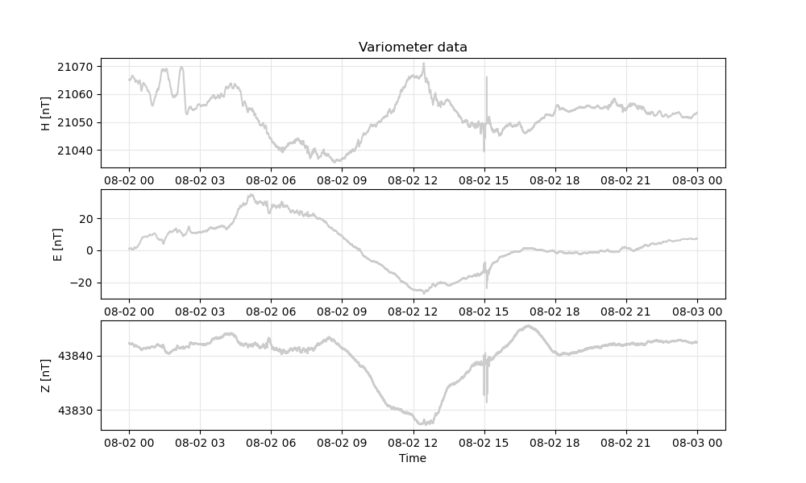
You can save this plot to a file using:
fig.savefig("/tmp/pl_421.png")
4.3 Timeseries data from multiple streams
The timeseries plotting method is specifically designed for multiple diagrams from different data sets. To demonstrate that we load additional scalar data and then plot variometer and scalar data together including some new options. Please note the list character of supplied streams and selected keys. Many additional options require the same dimensions as the keys array, some the dimensions of the stream list.
scalar = read(example2)
fig,ax = mp.tsplot([vario,scalar],keys=[['x','y','z'],['f']], title="Variometer data", grid=True, width=10,
height=2, yranges=[[[21000,21100],[-50,50],[43800,43850]],[[48600,48650]]], ylabelposition=-0.1,
dateformatter="%Y-%m-%d %H", legend=True, alpha=0.5,
fill=[[[],[{"boundary":0,"fillcolor":"red"},{"boundary":0,"fillcolor":"blue","fillrange":"smaller"}],[]],[[]]])
The option yranges allows to define individual ranges for each plot, ylabelposition puts all labels at the same x position, dateformatter changes the x labels and rotates them to not overlap and a simple default legend can be added as well. Both grid and legend allow to provide a dictionary with detailed format specifications. The selected fill option is applied to key y, the E component, and defines everything above 0 to be filled red and everything below 0 to be filled blue. The transparency alpha is set to 0.5.
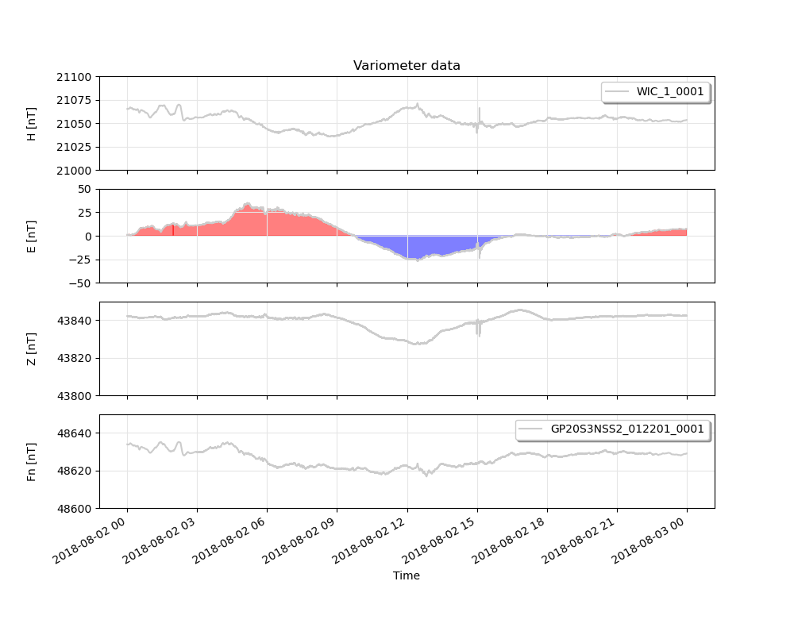
It is recommended to use the list type parameters even when loading a single data set, at least when using more complex options. This will help to provide the parameters correctly.
4.4 Symbols and colors
In the following example we open a single basevalue data set and demonstrate the usage of different plot symbols, colors, and padding. Padding defines scale extensions for the y scale which would typically use maximum and minimum values from data.
basevalue = read(example3)
fig,ax = mp.tsplot([basevalue],[['dx','dy','dz']], symbols=[['.','-.x','--o']],
colors=[[[0.2, 0.2, 0.2],'r','blue']], padding=[[1,0.005,0.5]], height=2)
This will produce this plot:
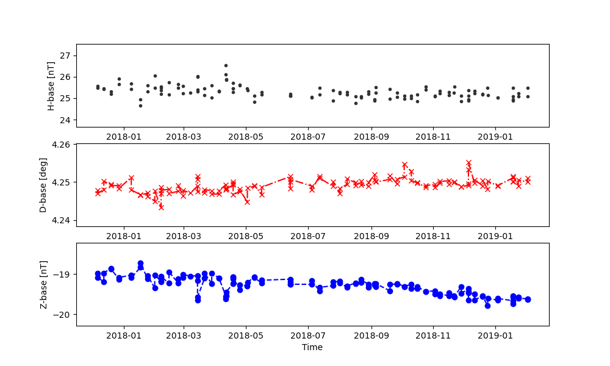
In a next example we will plot the H components of three observatories. For this we load data from the USGS webservice.
data1 = read("https://geomag.usgs.gov/ws/data/?id=BOU")
data2 = read("https://geomag.usgs.gov/ws/data/?id=NEW")
data3 = read("https://geomag.usgs.gov/ws/data/?id=SIT")
fig,ax = mp.tsplot([data1,data2,data3],[['x'],['x'],['x']],colors=[['g'],['r'],['b']],legend=True,height=2)
The obtained plot show the data on similar timescales below each other.
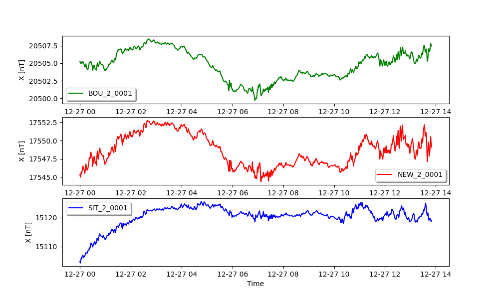
If you want to plot them in a single diagram then just define a single key value. fig,ax = mp.tsplot([data1,data2,data3], [['x']], colors=[['g'],['r'],['b']],
legend={"legendtext":('BOU', 'SIT', 'NEW')}, height=2)
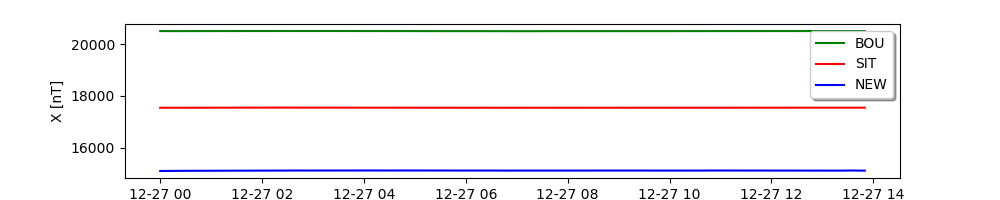
A final and more complex example is used to disply spot basevalue data from different instruments. For this example we firstly identify the individual instruments in a data set, then construct separate datastreams for each instrument and finally display all the data sets within diagrams for the H, D and Z baseline.
data = read(example3)
# Check the columns contents
print(data.contents())
instrumentskey = 'str2'
# Get a list of unique instruments
instruments = data.unique(instrumentskey)
# Create lists of data for each instrument plus symbols and colors
streamlist,colorlist,symbollist,yrangelist = [],[],[],[]
key = 'str2'
for idx,inst in enumerate(instruments):
t = data.extract(key,inst)
streamlist.append(t)
colorlist.append([[0.5+idx/8,0+idx/4,0.5-idx/8],[0.5+idx/8,0+idx/4,0.5-idx/8],[0.5+idx/8,0+idx/4,0.5-idx/8]])
symbollist.append(['.','.','.'])
yrangelist.append([[21,25],[3.665,3.682],[-22,-16]])
# Plot everything and add a legend
lg = {"legendtext":instruments,"legendposition":"upper right","legendstyle":"shadow","plotnumber":2}
fig,ax = mp.tsplot(streamlist,[['dx','dy','dz']], symbols=symbollist, colors=colorlist, legend=lg,
yranges=yrangelist, height=2)
This results in the following plot.
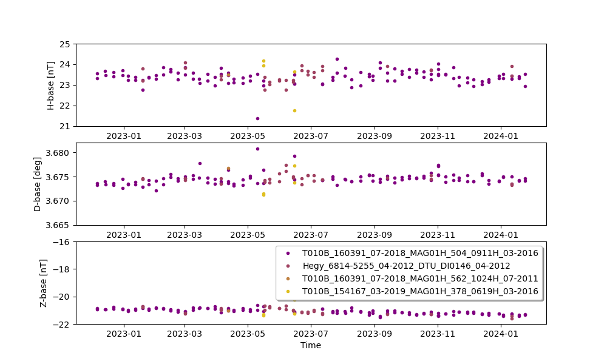
4.5 Patches, annotations and functions in tsplot
Patches are used to mark certain regions within the plot. A patch is described as a python dictionary as shown in this example:
variometer = read(example4)
patch = {"ssc" : {"start":datetime(2024,5,10,17,6),"end":datetime(2024,5,10,17,8),"components":"x","color":"red","alpha":0.2},
"initial": {"start":datetime(2024,5,10,17,8),"end":datetime(2024,5,10,19,10),"components":"x","color":"yellow","alpha":0.2},
"main": {"start":datetime(2024,5,10,19,10),"end":datetime(2024,5,11,2,0),"components":"x","color":"orange","alpha":0.2},
"recovery": {"start":datetime(2024,5,11,2,0),"end":datetime(2024,5,12,11),"components":"x","color":"green","alpha":0.2}}
fig,ax = mp.tsplot([variometer], keys=[['x']], patch=patch, height=2)
Patches are also used to mark flags as shown in section 6 and in further examples in sections 5 and 8. If you want to add annotations then use the option annotate. If set to True, then the patch keys are added as annotations in the upper part of the plot. The y-position is alternating. For flags, it is recommended to use labels or label IDs as annotations. Do that by selecting them by i.e. annotate='labelid'.
Functions are discussed in section 5.9. There you will also find numerous examples on how to plot these functions along with data.
4.6 Other plots
Frequency plots can be constructed using matplotlib build in methods and some examples are provided in section 5. Stereo diagrams will be added in a future version of MagPy.
5. Timeseries methods
Lets load some example data set to demonstrate the application of basic data stream timeseries manipulation methods.
data = read(example5)
mp.tsplot(data, height=2)
5.1 Get some basic data characteristics and commonly used manipulations
5.1.1 Basic data characteristics
Firstly check what data is actually contained in the data stream. If you want to now which column keys are used in the current data set use
print (data.variables())
Some basic column information, particularly column name and units as assigned to each column key can be obtained by
print (data.get_key_name('x'))
print (data.get_key_unit('x'))
The following command will give you a an overview about used keys and their asigned column names and units
data._print_key_headers()
The amount of data in each column needs to be identical. You can check the length of all columns using
print(data.length())
As all columns require the either the same length or zero length, you simply check the length of the time column for the total amount of individual timesteps. This will be returned by the classic len command
print(len(data))
A quick overview of some data parameters can be obtained using the stats command. This command will return a
dictionary with the results. If you want a direct printout you can use the format option. Currently supported is
a markdown output, requiring however the package IPython
d = data.stats()
5.1.2 Modifying data columns
The following methods allow you modifying individual data columns, move them to other keys or add some new information into your data set. Lets deal with another example for the following commands and extract data from key 'f' into a simple numpy array:
fdata = read(example2)
fcolumn = fdata._get_column('f')
print (len(fcolumn))
Now we create a new data column filled with random values and insert it into key 'x'
xcolumn = np.random.uniform(20950, 21000, size=len(fcolumn))
fdata = fdata._put_column(xcolumn,'x')
Assign some variable name and unit to the new column and plot the new data set as shown in Figure
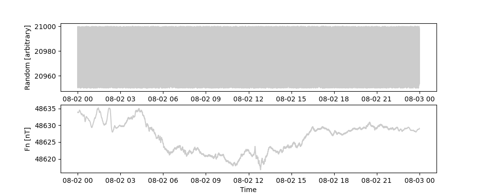
fdata.header['col-x'] = 'Random'
fdata.header['unit-col-x'] = 'arbitrary'
mp.tsplot(fdata, height=2)
Other possibly commands to move, copy or drop individual columns are as follows
fdata = fdata._copy_column('x','var1')
fdata = fdata._move_column('var1','var2')
fdata = fdata._drop_column('var2')
Creating a data set with selected keys can also be accomplished by
fdata = fdata._select_keys(['f'])
If you want to extract data by some given threshold values i.e. get only data exceeding a certain value you should
have a look at the extract method. The extract method requires three parameters: the first one defining the column/key name
the second the threshold value, and the third one defines a comparator, which can be one of ">=", "<=",">", "<", "==", "!=",
default is "==". You can also apply the extract method on columns containing strings but then only with "==".
extdata = fdata.extract("f" , 48625, ">")
Columns consisting solely of NaN values con be dropped using
fdata = fdata._remove_nancolumns()
A random sub-selection of data can be obtained using randomdrop. The percentage defines the amount of data to be
removed. You can also define indices which cannot be randomly dropped, the first and last point in our example below.
dropstream = data.randomdrop(percentage=50,fixed_indicies=[0,len(data)-1])
As an example and for later we will add a secondary time column with a time shift to fdata
tcolumn = fdata._get_column('time')
newtcolumn = np.asarray([element+timedelta(minutes=15) for element in tcolumn])
fdata = fdata._put_column(newtcolumn,'sectime')
print (fdata.variables())
5.1.3 All about time
To extract time constrains use the following methods: Covered time range
print (data.timerange())
print (data.start())
print (data.end())
The sampling period in seconds can be obtained as follows
print (data.samplingrate())
Whenever you load data sets with MagPy the data will be sorted according to the primary time column You can manually repeat that anytime using
data = data.sorting()
If you want to select specific time ranges from the already opened data set you can use the trim method
trimmeddata = data.trim(starttime='2018-08-02T08:00:00', endtime='2018-08-02T09:00:00')
print(" Timesteps after trimming:", len(trimmeddata))
The trim method will create a new datastream containing only data from the selected time window. There is another
mainly internally used method _select_timerange which will do exactly the same as trim but returns only the
data array (ndarray) without any header information
ar = data._select_timerange(starttime='2018-08-02T08:00:00', endtime='2018-08-02T09:00:00')
print(" Datatype after select_timerange:", type(ar))
print(" Timesteps after _select_timerange:", len(ar[0]))
Inversely you can drop a certain time range out of the data set by
ddata = data.remove(starttime='2018-08-02T08:00:00', endtime='2018-08-02T09:00:00')
Please note that the remove command removes all timesteps including the given starttime and endtime.
Finally you can trim the given stream also by percentage or amount. This is done using the cut method and its
options. By default cut is using percentage. The following command will cutout the last 50% of data
cutdata = fdata.cut(50,kind=0,order=0)
print(cutdata.timerange())
Choosing option kind=1 will switch from percentage to amount and order=1 will take data from the beginning of the data set
cutdata = fdata.cut(10,kind=1,order=0)
print(cutdata.timerange())
The default key list of any MagPy data stream supports two time columns 'time' and 'sec_time'. The secondary time column might be used to store an alternative time reading i.e. GPS dates in the primary columns and NTP time in the secondary one. You can switch this columns using a single command.
shifted_fdata = fdata.use_sectime()
If you want to get the line index number of a specific time step in your data series you can get it by
index = fdata.findtime("2018-08-02T22:22:22")
print(index)
5.2 Coordinate transformation and rotations
5.2.1 Rotations
Lets first look at our example data set. The example is provided in HEZ components. In order to convert HEZ into XYZ
components we simply need to rotate the data set by the declination value. You can achieve that by using the rotation
method
xyzdata = data.rotation(alpha=4.3)
xyzdata.header['DataComponents'] = 'XYZ'
xyzdata.header['col-x'] = 'X'
xyzdata.header['col-y'] = 'Y'
xyzdata.header['col-z'] = 'Z'
mp.tsplot(xyzdata, height=2)
Vectorial data can be rotated using the rotation method. This method makes use of an Euler rotation which supports
3D rotations. This differs from the rotation method of MagPY 1.x, which used a vectorial rotation by yaw and pitch.
Please note, that if your XY plane is horizontal, then alpha of old and new method are identical. The new method
allows rotations around the z axis (alpha), the y axis (beta) and the x axis (gamma). Default Euler rotation
uses a ZYX order. Assume a simple vector x=4, y=0 and z=4. Rotation by alpha=45° will lead to x=2,y=2,z=4.
Please note: you need to supply xyz data when applying the rotation method.
rotated_data = data.rotation(alpha=45, beta=45, gamma=45)
Inverting a rotation is possible by the invert option.
original_data = rotated_data.rotation(alpha=45, beta=45, gamma=45, invert=True)
5.2.2 Transforming coordinate systems
Assuming vector data in columns x,y,z you can freely convert between cartesian xyz, cylindrical hdz, and spherical idf coordinates:
hdzdata = xyzdata.xyz2hdz()
mp.tsplot(hdzdata, height=2)
The summary method _convertstream can also be used by giving the conversion type as option. The following conversions
are possible: 'xyz2hdz','hdz2xyz','xyz2idf','idf2xyz':
xyzdata = hdzdata._convertstream('hdz2xyz')
mp.tsplot(xyzdata, height=2)
The vectorial data columns as defined by the keys 'x','y','z' need to filled accordingly. i.e. a XYZ data stream has X in key 'x', Y in key 'y' and Z in key 'z', all with the same unit, usually nT in magnetism. A HDZ data stream as H assigned to key 'x', D in key 'y' and Z in key 'z'. H and Z are provided with the same unit (nT) and D has to be provided in degrees.decimals. IDF data contains I in key 'x', D in key 'y' and F in key 'z', with I and D provided in degree.decimals.
5.2.3 Determining rotation angles
If you have a measurement (XYZ data) and would like to obtain the rotation values regarding and expected reference direction defined by referenceD reference declination and referenceI inclination, both given in degree.decimals you can use the following method. Let us apply this method to the original rotdata stream, which contains the HEZ data set rotated by alpha and beta of 45 degree. The HEZ data has an expected declination of 0 and and expected inclination of 64.4 degree. Please note that these values are not exact:
alpha, beta = rotdata.determine_rotationangles(referenceD=0.0,referenceI=64.4)
print (alpha, beta)
The method will return angles with which rotdata needs to be rotated in order to get a non-rotated data set. Thus alpha and beta of -45 degree will be obtained.
5.3 Filtering and smoothing data
5.3.1 General filter options and resampling
MagPy's filter uses the settings recommended by IAGA/INTERMAGNET. Ckeck help(data.filter) for further options
and definitions of filter types and pass bands. Here is short list of supported filter types:
'flat','barthann','bartlett','blackman','blackmanharris','bohman','boxcar',
'cosine','flattop','hamming','hann','nuttall','parzen','triang','gaussian','wiener','butterworth'
Important options of the filter method, beside the chosen filter_type are filter_width which defines the window
width in a timedelta object and the resample_period in seconds defining the resolution of the resulting data set.
To get an overview over all filter_type and their basic characteristics you can run the following code. This will
calculate filtered one-minute data and then calculate and plot the power spectral density of each filtered data set.
Please note that we apply the missingdata='interpolate' option as the matplotlib.pyplot.psd method requires the data
set being free of NaN values.
filterlist = ['flat', 'barthann', 'bartlett', 'blackman', 'blackmanharris', 'bohman',
'boxcar', 'cosine', 'flattop', 'hamming', 'hann', 'nuttall', 'parzen', 'triang',
'gaussian', 'wiener', 'butterworth']
for filter_type in filterlist:
filtereddata = data.filter(filter_type=filter_type, missingdata='interpolate', filter_width=timedelta(seconds=120), resample_period=60)
T = filtereddata._get_column('time')
t = np.linspace(0,len(T),len(T))
h = filtereddata._get_column('x') - filtereddata.mean('x')
sr = filtereddata.samplingrate() # in seconds
fs = 1./sr
fig, (ax0, ax1) = plt.subplots(2, 1, layout='constrained')
ax0.plot(t, h)
ax0.set_xlabel('Time')
ax0.set_ylabel('Signal')
ax1.set_title(filter_type)
power, freqs = ax1.psd(h, NFFT=len(t), pad_to=len(t), Fs=fs, scale_by_freq=True)
plt.show()
The filter method will resample the data set by default towards a projected period. In order to skip resampling
choose option noresample=True. You can apply the resample method also to any data set as follows. Resample will
extract values at the given sampling interval or take the linear interpolated value between adjacent data points if no
value is existing at the given time step.
resampleddata = data.resample(['x','y','z'],period=60)
print(len(resampleddata))
print(resampleddata.timerange())
5.3.2 Smoothing data
The smooth method is similar to the filter method without resampling. It is a quick method with only a limited amount
of supported window types: flat, hanning (default), hamming, bartlett and blackman. The window length is given as number
of data points. Smooth will throw an error in case of columns with only NaN values, so make sure to drop them before
data = data._remove_nancolumns()
smootheddata = data.smooth(window='hanning', window_len=11)
5.3.3 Filtering in geomagnetic applications
When dealing with geomagnetic data a number of simplifications have been added into the application. To filter the data
set with default parameters as recommended by IAGA you can skip all the options and just call filter.
It automatically chooses a gaussian window with the correct settings depending on the provided sampling rate of the
data set and filter towards the next time period i.e. if you supply 1sec, 5 sec or 10 sec period data they will be
filtered to 1 min. Therefore in basically all geomagnetic applications the following command is sufficient
filtereddata = data.filter()
Get sampling rate and filtered data after filtering (please note that all filter information is added to the data's meta information dictionary (data.header):
print("Sampling rate after [sec]:", filtereddata.samplingrate())
print("Filter and pass band:", filtereddata.header.get('DataSamplingFilter',''))
5.3.4 Missing data and its treatment
When dealing with geomagnetic data, especially when it comes to the frequency domain, then the treatment of missing
data and is of particular importance. The time domain should be evenly distributed and missing data needs to be
adequately considered. Missing data is often replaced by unrealistic numerical values like 99999 or negative data.
MagPy is using NaN values instead to internally treat such missing data. Two methods are available to help you
preparing your data for frequency analysis. The get_gaps method will analyse the time column and
identify any missing time steps for an equally distant time scale. Missing time steps will be filled in and NaNs will
be added into the data columns. In order to deal with NaN values you can use filtering procedures as shown above or
use the interpolate_nan method (section 5.9.2), which will linearly interpolate NaNs. Please be careful with these
techniques as you might create spurious signals when interpolating.
data = data.get_gaps()
data = data.interpolate_nans(['x'])
The power spectral density can then be analyzed using build in python matplotlib methods. First extract time and data column.
T = data._get_column('time')
print (len(T))
t = np.linspace(0,len(T),len(T))
h = data._get_column('x')
sr = data.samplingrate() # in seconds
fs = 1./sr
Then plot timeseries of the selected data and psd.
fig, (ax0, ax1) = plt.subplots(2, 1, layout='constrained')
ax0.plot(t, h)
ax0.set_xlabel('Time')
ax0.set_ylabel('Signal')
power, freqs = ax1.psd(h, NFFT=len(t), pad_to=len(t), Fs=fs, detrend='mean', scale_by_freq=True)
plt.show()
5.3.4 Quickly get daily mean values
Another method which belongs basically to the filter section is the the dailymeans method which allow you to
quickly obtain dailymean values according to IAGA standards from any given data set covering at least one day.
Acceptable are all data resolutions as the dailymeans will filter the data stepwise until daily mean values.
dailymeans = data.dailymeans()
5.4 Calculating vectorial F and delta F
Vectorial F can be easily calculated if the vectorial keys x,y,z are available. Lets start with examples1 from the provided data sets. Example1 contains a column filled with nan values for testing purposes. We first remove this column (see also 5.1.2).
data = read(example1)
data = data._remove_nancolumns()
Afterwards we check the available keys in the data set and see that x,y,z are available, a prerequisite to calculate the vector sum. We can also check what components are actually stored below keys x,y,z by checking the data's meta information. HEZ is perfectly fine for calculating the vector sum.
print(data.variables())
print(data.header.get('DataComponents'))
The command 'calc_f` is now performing the calculation of the vector sum and stores it with key f
data_with_F_v = data.calc_f()
Mostly however you will be interested not in vectorial F (F_V) but in delta values between F_V and a scalar F (F_S). Lets read an independent F data set from example2, which covers a similar time range as vectorial data from example1.
fdata = read(example2)
Let us assume you have two data sources variodata with X,Y,and Z data as well as scalardata with F. Make sure that both data sets cover the same time range and are sampled at the same frequency and time steps
combineddata = merge_streams(data,fdata) # checkout section 5.10 for details
Now the data file contains xyz (hdz, idf) data and an independently measured f value. You can calculate delta F between the two instruments using the following:
combineddata = combineddata.delta_f()
Combined data will now contain an additional column at key 'df' containing F_v - F_s, the scalar pier difference as defined within the IM technical manual. The delta F values will added to key/column df (Figure
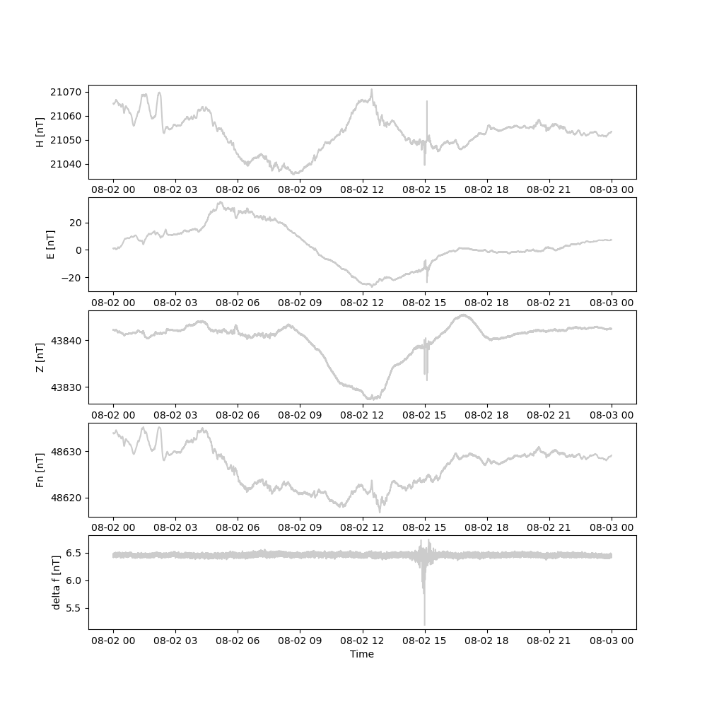
): mp.tsplot(combineddata, keys=['x','y','z','f','df'], height=2)
5.5 Means, amplitudes and standard deviation
Mean values for certain data columns can be obtained using the mean method. The mean will only be
calculated for data with the percentage of valid data points. By default 95% of valid data is required.
You can change that by using the percentage option. In case of too many missing data points, then no mean
is calculated and the function returns NaN.
print(data.mean('x', percentage=80))
If you want also the standard deviation use option std:
print(data.mean('x', percentage=80, std=True))
The median can be calculated by defining the meanfunction option. In this case the option std will return MAD, the
median absolute deviation:
print(data.mean('x', meanfunction='median'))
The amplitude, the difference between maximum and minimum, can be obtained as follows
print(data.amplitude('x'))
Just maximum and minimum values can be obtained with these methods
print("Maximum:", data._get_max('x'))
print("Minimum:", data._get_min('x'))
If you just need the variance you can either square the standrad deviation or use the _get_variance method
print("Variance:", data._get_variance('x'))
5.6 Offsets and Scales
5.6.1 Offsets
Constant offsets can be added to individual columns using the offset method with a dictionary defining
the MagPy stream column keys and the offset to be applied (datetime.timedelta object for time column, float for all others):
offsetdata = data.offset({'time':timedelta(seconds=0.19),'f':1.24})
5.6.2 Scaling
Individual columns can also be multiplied by values provided in a dictionary:
multdata = data.multiply({'x':-1})
5.7 Derivatives and integrating
Time derivatives, which are useful to identify outliers and sharp changes, are calculated based on successive gradients based on numpy gradient. By using the option put2keys you can add the derivative to columns of your choice. By default they are added to dx,,dy, dz, df.
diffdata = data.derivative(keys=['x','y','z'],put2keys = ['dx','dy','dz'])
mp.tsplot(diffdata,keys=['x','dx'], height=2)
We can also integrate the curve again based on scipy.integrate.cumtrapz. Use the integratemethod for this purpose.
Integrate can only be applied to keys x,y,z,f and puts integrated data into columns dx,dy,dz,df. So sometimes you will
need to move data into the projected columns first. In the following we will move one of the earlier derived
columns towards x and then integrate. The correct scaling cannot be reconstructed and needs to be adjusted separately
diffdata._move_column('dx','x')
test = diffdata.integrate(keys=['x','y','z'])
mp.tsplot(test,keys=['dx'], height=2)
5.8 Extrapolation
The extrapolation method extrapolate allows to extrapolate a data set towards given start and end times. Several
different methods are available for extrapolation: The most simple extrapolation method, which was already available
in MagPy 1.x is the duplication method (option: method='old') which duplicates the first and last existing points
at given times. New methods starting form 2.0 are the 'spline' technique following
this approach, a 'linear'
extrapolation and a 'fourier' technique as described here.
Please note: the extrapolation method will remove all non-numerical columns, any NaN columns and secondary time columns
as those cannot be extrapolated.
data = read(example5)
shortdata = data.trim(starttime='2018-08-29T09:00:00', endtime='2018-08-29T14:00:00')
extdata = shortdata.extrapolate(starttime=datetime(2018,8,29,7), endtime=datetime(2018,8,29,16), method='fourier')
The different techniques will result in schemes as displayed in the following diagrams (not the example above):
| 1 | 2 |
|---|---|
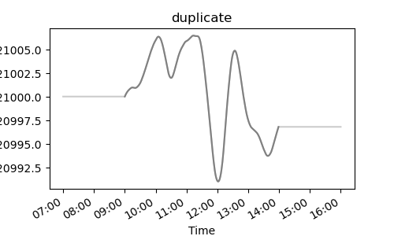 |
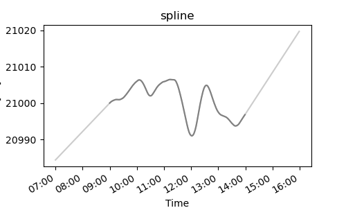 |
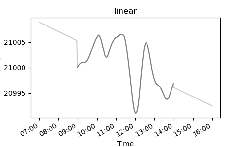 |
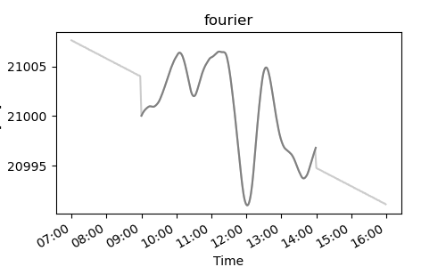 |
5.9 Functions
5.9.1 Fitting data
MagPy offers the possibility to fit functions to data using a number of different fitting functions:
func = data.fit(keys=['x','y','z'], fitfunc='spline', knotstep=0.1)
mp.tsplot([data],[['x','y','z']],functions=[[func,func,func]])
Supported fitting functions fitfunc are polynomial 'poly', 'harmonic', 'least-squares', 'mean', 'spline'. The default fitting method is the cubic spline function 'spline'. You need to specific the option fitdegree for polynomial and harmonic fitting functions. fitdegree=1 corresponds to a linear fit. Default value is 5. For fitfunc='spline' you need to specify an average spacing for knots. The knotstep parameter will define at which percental distance a knot should be located. i.e. knotstep=0.33 would place altogether 2 knots at 33% within the timeseries. Smaller values will increase the number of knots and thus the complexity of the fit. Thus, knotstep need to contain a positive number below 0.5.
It is possible to calculate and display many different functions for a single data set. In the next examples we will have two adjacent but different fit functions for x and y and a different function covering a different timerange for z.
func1 = sstream.fit(keys=['x','y'], fitfunc='spline',starttime="2022-11-21", endtime="2022-11-22")
func2 = sstream.fit(keys=['x','y'], fitfunc='mean',starttime="2022-11-22", endtime="2022-11-23")
func3 = sstream.fit(keys=['z'], fitfunc='poly',starttime="2022-11-21", endtime="2022-11-24")
A possible plot looks a follows. For x will plot the two fitting functions 1 and 2, for y we only plot function 2. For the z component selected functions 1 and 3. As func1 does not contain any fit for z, this function will be ignored.
mp.tsplot([sstream],[['x','y','z']], symbols=[['-','-','-']], padding=[[2,2,2]], functions=[[[func1,func2],func2,[func1,func3]]], height=2)
5.9.2 Interpolation
The interpol method uses Numpy's interpolate.interp1d to interpolate values of a timeseries. The option kind defines
the type of interpolation. Possible options are 'linear' (default), 'slinear ' which is a first order spline,
'quadratic' = spline (second order), 'cubic' corresponding to a third order spline, 'nearest' values and 'zero'. The
interpolation method can be used to interpolate missing data. Lets create put some data gaps into our example data set
for demonstration. We will use randomdrop to remove some data lines and then use get_gaps to identify this lines and
insert timesteps, but leaving values as NaN. Finally we can then interpolate missing data
discontinuousdata_with_gaps = data.randomdrop(percentage=10,fixed_indicies=[0,len(teststream)-1])
print("Before: {}, After randdrop: {}".format(len(data), len(discontinuousdata_with_gaps)))
continuousdata_with_gaps = discontinuousdata_with_gaps.get_gaps()
contfunc = continuousdata_with_gaps.interpol(['x','y'],kind='linear')
mp.tsplot([continuousdata_with_gaps],[['x','y','z']],functions=[[contfunc,contfunc,None]])
Another simple interpolation method allows for a quick linear interpolation of values, directly modifying the supplied timeseries (see also section 5.3.4).
interpolatedts = continuousdata_with_gaps.interpolate_nans(['f'])
5.9.3 Adopted baselines
Baselines are also treated as functions in MagPy. You can calculate the adopted baseline as follows. A more detailed description, also highlighting options for adopted baseline functions and jumps and all other aspects of adopted baseline fitting are given in section 7.5. The baseline method will add functional parameter and basevalues into the data header of variodata. You find these meta information in header keys 'DataAbsInfo' and 'DataBaseValues'. 'DataAbsInfo' contains the functional parameters of which the first two elements of each function list describe the time range given in numerical matplotlib.dates.
variodata = read(example5)
basevalues = read(example3)
func = variodata.baseline(basevalues)
5.9.4 Functions within a DataStream object
The full function objects can be added to the timeseries meta information dictionary and stored along with the data set. Such Object storage is only supported for MagPy's PYCDF format. To add functions into the timeseries data header use:
variodata = variodata.func2header(func)
When reading PYCDF data files and also INTERMAGNET IBLV data files then functional values (adopted baselines of BLV files) are available in the header. Access it as follows:
blvdata = read(example7)
func = blvdata.header.get('DataFunctionObject')
fig, ax = mp.tsplot([blvdata],[['dx','dy','dz']], symbols=[['.','.','.']], padding=[[0.005,0.005,2]],
colors=[[[0.5, 0.5, 0.5],[0.5, 0.5, 0.5],[0.5, 0.5, 0.5]]], functions=[[func,func,func]],
height=2)
5.9.5 Applying functions to timeseries
Functions can be transferred to data values and they can be subtracted for residual analysis. Use method func2stream for this purpose. You need to supply the functions to func2stream, define the keys and a mode on how functions are applied to the new timeseries. Possible modes are 'add', 'sub' for subtracting, 'div' for division, 'multiply' and 'values' to replace any existing data by function values. In order to analyse residuals for a adopted baseline function you would do the following:
residuals = blvdata.copy()
residuals = residuals.func2stream(func, keys=['dx','dy','dz','df'],mode='sub')
print(" Get the average residual value:", residuals.mean('dy',percentage=90))
mp.tsplot([residuals],[['dx','dy','dz']], symbols=[['.','.','.']], height=2)
Replacing existing data by interpolated values can be accomplished using the func2stream method. Just recall the example
of 5.9.2, where we filled gaps by interpolation. Know we replace all existing inputs (data and NaNs)
by interpolated values
contfunc = continuousdata_with_gaps.interpol(['x','y','z'],kind='linear')
data = data.func2stream(contfunc, keys=['x','y','z'],mode='values')
5.9.6 Saving and reading functions separately
It is possible to save the functional parameters (NOT the functions) to a file and reload them for later usage. Please note that you will need to apply the desired fit/interpolation/baseline adoption again based on these parameters to obtain a function object. The parameters will be stored within a json dictionary.
func_to_file(contfunc, "/tmp/savedparameter.json")
To read parameters in again
funcparameter = func_from_file("/tmp/savedparameter.json")
The variable funcparameters will then contain a dictionary with all contents of the original function list, including time ranges and specific parameters for each value. Extract these values by standard dict.get() and reapply to the data stream.
5.10 Multiple timeseries
Unlike in the previous sections, the following multiple timeseries method descriptions are only accompanied by hypothetical data sets which are not part of the examples data sets.
5.10.1 join
Let us assume you have two data sets, data1 containing X,Y,Z data and data2 containing X,Y,Z and F data with an overlapping time range. Such example data sets are shown in Figure
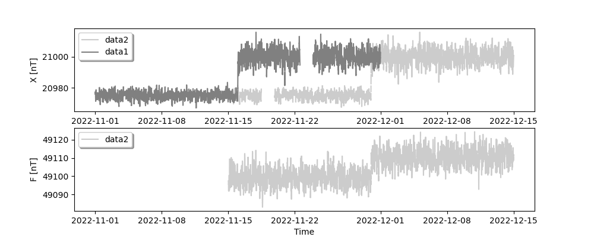
. Now you have a number of different possibilities to combine these two data sets. First of all you can use thejoin_streams method
which always will keep the first provided stream unchanged and add information from the second stream into the data set.
joined_stream1 = join_streams(data1, data2)
This command will result in a joint data set containing all data from data1 and, outside the time range of data1, the data of data2 as shown in Figure
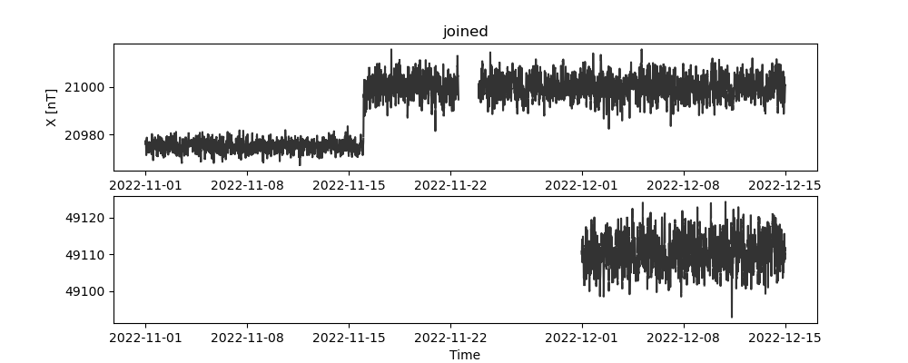
. Calling the same function with a different order joined_stream1 = join_streams(data2, data1)
will result in a combination as shown in Figure
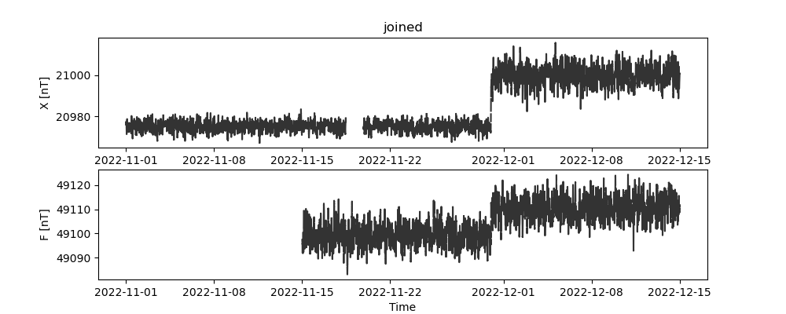
. You might want to add a comment by adding option comment to thejoin_streams method.
5.10.2 merge
Merging data comprises combining two streams into one new stream. The two data sets on which merge_streams is applied
need to have the same sampling rate and need to overlap in time. The method includes adding a new column from a second
stream, filling gaps with data from another stream (mode='insert') or replacing data with contents from another stream
(mode='replace'). The following examples sketch typical usages. Firstly, we use the default mode='insert':
merged_stream1 = merge_streams(data1, data2)
Application results in an addition of the f-column to stream1 and the filling of the data gap in data 1 with values of data2 (see Figure
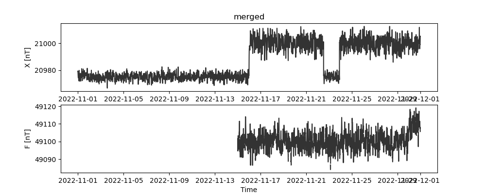
.) The time range of the resulting stream will always cover the range of the data set provided first. Another option is demonstrated in the next example, Here data 1 im merged into data2. Here we replace the contents of column y by existing contents of column y from data1. Data not existing in data1 will remain unchanged. merged_stream1 = merge_streams(data2, data1, mode='replace', keys=['y'])
5.10.3 subtract
Sometimes it is necessary to examine the differences between two data streams e.g. differences between the F values of
two instruments running in parallel at an observatory. The method subtract_streams is provided for this analysis:
diff = subtract_streams(data1,data2)
This command will result in Figure
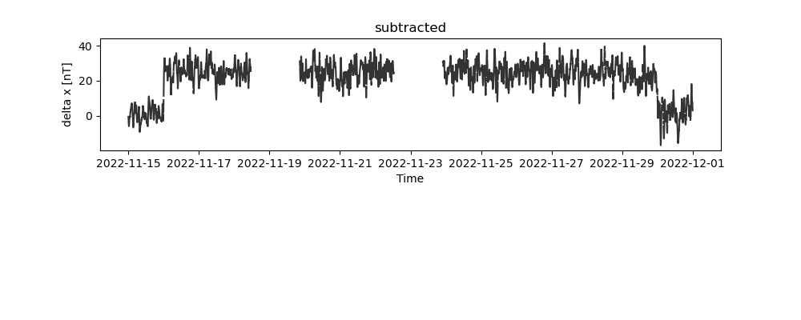
. If you specify keys using option i.e. keys=['x'] only these data specific keys will remain. You might want to use diff.get_gaps() to fill np.nans into missing time steps.5.10.4 append
The append method is applying the join_streams method to a list of streams. This is useful if you have many
individual data sets and want to combine them.
long_stream = append_streams([list,with,many,streams])
5.10.5 determine_time_shift
The method 'determine_time_shift' allows for determining phase shifts between to input signale. The shift can be obtained by two two different methods. Cross correlation based on scipy.signal.correlate is used when selecting method 'correlate'. More efficient on large data sets is the method 'fft'. Assume you have two shifted signals as shown in Figure
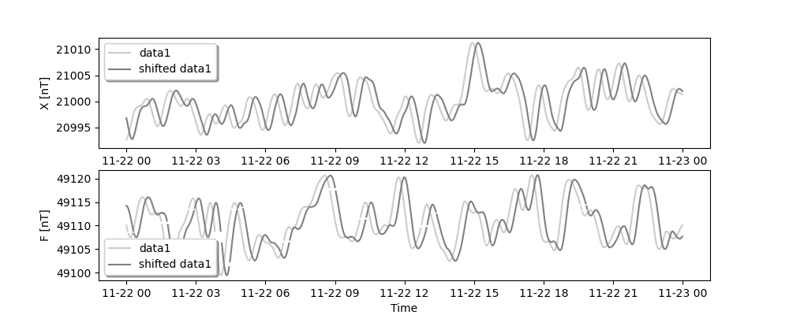
. The obtained shift will give you the amount of second to shift data2 in order to obtain data1. Apply time shift calculations result in print ("(Correlate) Time shift in seconds: {}".format(determine_time_shift(data1,shifted_data1, method='correlate', col2compare='f')))
print ("(FFT) Time shift in seconds: {}".format(determine_time_shift(data1,shifted_data1, method='fft', col2compare='f')))
(Correlate) Time shift in seconds: -898.8000000000001
(FFT) Time shift in seconds: -896.4
Expected value: -900 sec
5.12 All methods at a glance
For a summary of all supported methods can be found in appendix A2.
6. Annotating data and flagging
Geomagnetic raw data (and also data from all other disciplines) contains numerous signals of different natural and artificial sources, affecting various different frequency bands. These signals can generally be divided into two subgroups. Group 1 comprises all disturbing signals of mainly anthropogenic origin which are not considered for definitive data production. Such disturbing signals are typically removed before final data production. The basic treatment as well as the definition of such disturbances is not uniform. Some disturbances depend strongly on site location and environment. Group 2 consist of mainly natural signals, which are not removed for definitive data production. Among these signals are long and short term variations of which especially some short term variations are sometimes not easily distinguishable from group 1 disturbances. Ideally such data is flagged/labelled , which however is not performed very often in geomagnetic data analysis.
Hereinafter we will follow the same way as originally suggested as part of the MagPy software. We will label (flag) data in dependency of the observed signal. Signals will be assigned to either "suitable for definitive data" or "not suitable for definitive data". MagPy 2.x will use flagtypes, an integer value, to describe this assignment. Flagtype 1 and 3 will be used for signals to be removed, flagtype 1 for automatically identified signals, flagtype 3 for signals marked and labeled by an observer. Flagtype 2 and 4 are used for signals to be kept, 2 automatically identified by i.e. SSC detector, flagtype 4 for manually assigned markings. Flagtype 0 is used for labeled data without verified assignment to any of the types above. Such data will be kept for analysis. Each flagtype can contain various different individual labels. These labels will be characterized by a unique label identifier and a human readable description of the label. The following table contains an overview of the labels currently included in MagPy. Please note that additional labels can be easily incorporated into the processing scheme. Some details on specific labels are discussed later in this manual.
| FlagID | Description | LabelGroup |
|---|---|---|
| 000 | normal | 0 |
| 001 | lightning strike | 1 |
| 002 | spike | 1 |
| 012 | pulsation pc 2 | 2 |
| 013 | pulsation pc 3 | 2 |
| 014 | pulsation pc 4 | 2 |
| 015 | pulsation pc 5 | 2 |
| 016 | pulsation pi 2 | 2 |
| 020 | ssc geomagnetic storm | 2 |
| 021 | geomagnetic storm | 2 |
| 022 | crochete | 2 |
| 030 | earthquake | 1 |
| 050 | vehicle passing | 1 |
| 051 | nearby disturbing source | 1 |
| 052 | train | 1 |
| 090 | unknown disturbance | 1 |
LabelGroups: 0 - normal data, 1 - disturbance to be removed, 2 - signal to be kept
Marking or labelling certain signals within data sets is supported since the first versions of MagPy. MagPy2.x comes with a number of reorganizations and new functions to assist the observers. In section 6.1 we will firstly give you some instructions to some underlying routines of the new flagging module. Then, starting in section 6.2, we will focus on flagging methods which can be directly applied to data sets in order to obtain specific information on contained signals.
6.1 Basics of the flagging module
Data flagging is handled by magpy.core.flagging module.
from magpy.core import flagging
After importing this functionality we create an empty flagging object
fl = flagging.Flags()
This flagging object corresponds to a python dictionary consisting of a unique identifier as key and flagging contents as value. Flagging contents are subject to the following fields: obligatory are 'sensorid', 'starttime', 'endtime', 'components', 'flagtype' and 'labelid'. Optional fields are 'label', 'comment', 'groups', 'probabilities' 'stationid', 'validity', 'operator', 'color'. Automatically filled are fields 'modificationtime' and 'flagversion'. The unique identifier is constructed from the obligatory fields.
Add flags to this object
fl = fl.add(sensorid="LEMI025_X56878_0002_0001", starttime="2022-11-22T16:36:12.654362",
endtime="2022-11-22T16:41:12.654362", components=['x', 'y', 'z'], labelid='020', flagtype=4,
comment="SSC with an amplitude of 40 nT", operator='John Doe')
fl = fl.add(sensorid="GSM90_Y1112_0001", starttime="2022-11-22T10:56:12.654362",
endtime="2022-11-22T10:59:12.654362", components=['f'], flagtype=3, labelid='050')
fl = fl.add(sensorid="GSM90_Y1112_0001", starttime="2022-11-22T10:58:12.654362",
endtime="2022-11-22T11:09:45.654362", components=['f'], flagtype=3, labelid='050')
fl = fl.add(sensorid="LEMI025_X56878_0002_0001", starttime="2022-11-22T20:59:13.0",
endtime="2022-11-22T20:59:14.0", components=['x', 'y', 'z'], labelid='001', flagtype=3,
operator='John Doe')
You can get a formated output of the flagging contents by
fl.fprint(sensorid="LEMI025_X56878_0002_0001")
You might want to limit the output to specific sensor IDs by providing the Sensor ID as option. If you want to modify flags and keep the original state in the memory use the copy method
orgfl = fl.copy()
A number of methods are available for modifying and extracting flagging information. You can extract specific information for any content (field):
lightningfl = fl.select('comment', ['lightning'])
You can also select a specific time range by using the trim method
timefl = fl.trim(starttime='2022-11-22T09:00:00', endtime='2022-11-22T11:00:00')
Combination of different flagging objects is possible as follows
comb = timefl.join(lightningfl)
Sometime you are interested in the differences of two flagging objects
diff = comb.diff(fl)
Flags defined by a parameter (field) and searchterms for this parameter can be dropped from the flagging object
newfl = fl.drop(parameter='sensorid', values=['GSM90_Y1112_0001'])
Specific contents associated to a given field can be replaced
flmodified = fl.replace('stationid', '', 'WIC')
Time ranges of overlapping flags can be combined using the union method. Hereby the option level defines the required
grad of similarity with level=0 being the most stringent criteria - only combine if identical fields are found.
Providing a sampling period of the underlying data set will also combine consecutive flags within a sampling rate
time difference.
combfl = fl.union(samplingrate=1, level=0)
Sometimes automatically determined flags (i.e. outliers), need to be renamed in dependency of an observers decision.
I.e. a lot of lightning strike have been marked as "spikes" by an automatic routine. The observer identifies these
spikes to be of lightning origin. The observer can now just assign a single lightning flag and then run the
rename_nearby method to change any automatic flags within a given timerange (default is one hour):
renamedfl = fl.rename_nearby(parameter='labelid', values=['001'])
Finally, if you would like to obtain some general information on contents of your flagging object or just the overall
coverage you can use the following methods. The stats method comes with an "level" option, for more detailed
information, default is level=0.
mintime, maxtime = fl.timerange()
fl.stats(level=1)
6.2 Identifying spikes in data sets
Spikes are identified by a well known and commonly used technique for outlier detection. By running window of defined timerange across the sequence we determine the inner quartile range IQR for the sequence. Any datapoint exceeding the IQR by a given multiplier as defined in threshold will be termed "outlier".
Import the necessary modules:
from magpy.stream import *
from magpy.core import plot as mp
from magpy.core import flagging
Load a data record with data spikes:
datawithspikes = read(example1)
Lets trim the dataset to a disturbed sequence for better visibility
datawithspikes = datawithspikes.trim(starttime="2018-08-02T14:30:00",endtime="2018-08-02T15:30:00")
Mark all spikes using the automated function flag_outlier and return a flagging object. We define a timerange of
60 seconds and a threshold commonly applied for IQR techniques. The markall option defines that a data flagged in
any component will also create a flag in all other components as we assume that the full vector is affected:
fl = flagging.flag_outlier(datawithspikes, timerange=60, threshold=1.5, markall=True)
Please consider that markall is making use of all data columns within your data file. Drop flagged data from the "disturbed" data set.
datawithoutspikes = fl.apply_flags(datawithspikes, mode='drop')
Show original data in red and cleand data in grey in a single plot:
mp.tsplot([datawithspikes,datawithoutspikes],[['x','y','z']], colors=[['r','r','r'],['grey','grey','grey']])
This results in Figure
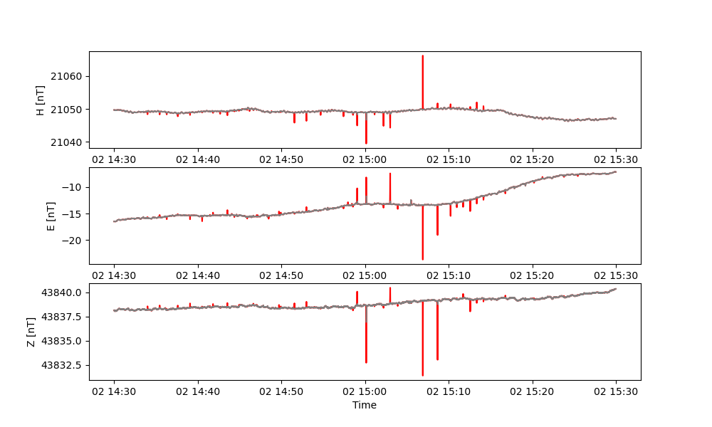
The flag_outlier method splits up the underlying data stream into overlapping chunks of successive datapoints. The
amount of datapoints in each chunk is determined by the given timerange divided by the sampling rate multiplied by 2.
If no timerange is given a window of 2600 data points is used. The overlap of the chunks corresponds to half the
window size. Only outliers found simultanuously in overlapping chunks are marked by the method. In case of low
resolution data with strongly varying sampling rates, i.e. spot basevalue data sets, both default window size
and determined window lengths from timeranges are unreliable. For such data sets it is useful to use the datawindow*
option which allows you to provide the analyzed window size directly i.e. window = 2 * datawindow.
fl = flagging.flag_outlier(basevaluedata, datawindow=60, threshold=3.5)
Saving flagging information within datastreams is also possible for a few data format, namely IMAGCDF and PYCDF. In order to save flagging information you have to assign the flagging object to a header element "DataFlags". A complete flagging dictionary is only stored in format_type PYCDF.
data = read(example1)
data.header["DataFlags"] = fl
data.write("/tmp", addflags=True, format_type='IMAGCDF')
When loading such data you can obtain the flagging information from the header info again.
data = read('/tmp/wic_20180802_000000_PT1S_1.cdf')
fl = data.header.get('DataFlags')
p = fl.create_patch()
fig, ax = mp.tsplot(data,patch=p, height=2)
You can also load PYCDF and PYSTR version 1.x and 0.x with flagging information, which was included differently previously. This flags with be stored in the new structure and are then accessible by the headers 'DataFlags'.
6.3 Flagging ranges
You can flag ranges either in time or value by using the flag_range method.
Import the necessary modules:
from magpy.stream import *
from magpy.core import plot as mp
from magpy.core import flagging
Then load a data record and firstly add a flagging range in time.
data = read(example1)
timefl = flagging.flag_range(data, keys=['x'],
starttime='2018-08-02T14:30:00',
endtime='2018-08-02T15:15:00',
flagtype=3,
labelid='051',
text="iron maiden dancing near sensor",
operator="Max Mustermann")
We also will flag values exceeding a given threshold in the same data set:
valuefl = flagging.flag_range(data, keys=['x'],
above=21067,
flagtype=0,
labelid='000',
text="interesting values for later discussion",
operator="Mimi Musterfrau")
For displaying put these flags together using the joinmethod:
fl = valuefl.join(timefl)
Create graphical patches for displaying this flagging information:
p = fl.create_patch()
Show flagged data in a plot:
fig, ax = mp.tsplot(data,['x'],patch=p, height=2)
This results in the following plot
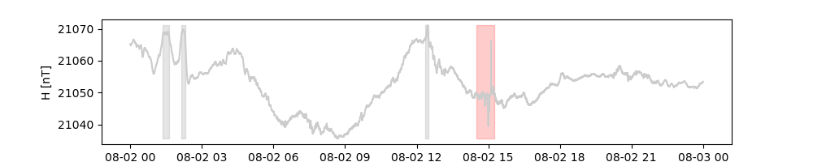
6.4 Flagging binary states
You can flag data based on binary states. This method can be used i.e. to flag data if a certain switch, stored as binary state in some data column, is turned on.
Import the necessary modules:
from magpy.stream import *
from magpy.core import plot as mp
from magpy.core import flagging
Then load a data record:
data = read(example1)
Add some artificial binary data i.e. a light switch
var1 = [0]*len(data)
var1[43200:50400] = [1]*7200
data = data._put_column(np.asarray(var1), 'var1')
Flag column x based on the switching state of column var1. By default status changes are flagged. The option markallon will additionally mark the full time range containing 1 in var1.
fl = flagging.flag_binary(data, key='var1', keystoflag=["x"],
flagtype=3,
text="light switch affecting signal",
markallon=True)
Create graphical patches for displaying this flagging information:
p = fl.create_patch()
Show flagged data in a plot:
fig, ax = mp.tsplot(data,['x'],patch=p, height=2)
It is also possible to plot flags without any linkage to a data file. For this purpose you need to supply an empty DataStream and then activate the force option of tsplot:
fig, ax = mp.tsplot(DataStream(), patch=p, height=2, force=True)
TODO: add some words on annotation here Result:
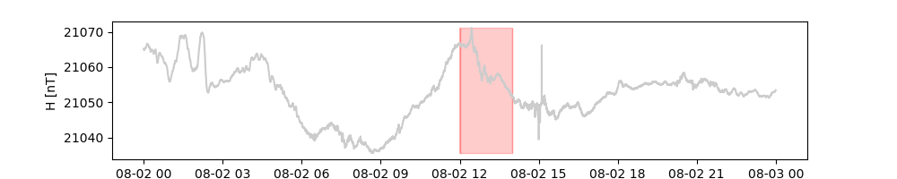
6.5 Converting data sets to flagging information
This example covers two subjects: Firstly we will convert a data stream into flagging information. Secondly we will apply flags defined for one data set to another one. By default any flagging information is directly related to the sensor information of the instrument on which flagging has been performed. Sometimes however it is necessary to apply flags identified in one data set on data from another independent data set. A typical example would be the quake information as follows.
Import the necessary modules:
from magpy.stream import *
from magpy.core import plot as mp
from magpy.core import flagging
Lets load some data from a suspended magnetometer. Such data might be affected by nearby earthquakes
yesterday = datetime.now() - timedelta(1)
today = datetime.now()
data = read("https://cobs.zamg.ac.at/gsa/webservice/query.php?id=WIC&starttime={}&endtime={}".format(yesterday.date(),today.date()))
print ("Got {} data points for data set with sensorid {}".format(len(data),data.header.get('SensorID')))
Get a timeseries of some recent earthquakes
quake = read('https://earthquake.usgs.gov/earthquakes/feed/v1.0/summary/4.5_week.csv')
Here you might want to filter the earthquake data and select only nearby shakes. This is described elsewhere. Now we just plot everything for the day covered by our data set. Trim the earthquake information to the same timerange as the data set:
quake = quake.trim(starttime="{}".format(yesterday.date()),endtime="{}".format(today.date()))
print ("Found {} earthquakes".format(len(quake)))
Transform quake data to a flagging object. Please note that we assign this flagging information to a group of instruments. Groups can look like "{'magnetism':['x','y','z','f'], 'gravity':['x'], 'RADONSGO_1234_0001':['x']}" and thus consist of SensorGroup or SensorID inputs from the data stream header plus the potentially affected keys by the flag. The here selected group contains xyz keys of the suspended variometer data set imported above.
fl = flagging.convert_to_flags(quake, flagtype=2, labelid='030', commentkeys=['M','f',' - ','str3'], groups={data.header.get('SensorID'):['x','y','z']})
Lets get a formated output of the flagging contents
fl.fprint(sensorid=quake.header.get('SensorID'))
Then create some patches for the variometer data
p = fl.create_patch(data)
Show flagged data in a plot:
fig, ax = mp.tsplot(data, ['x'], patch=p, height=2)
Result:
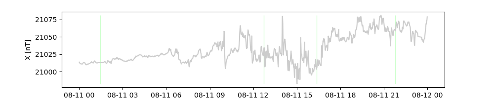
6.6 Saving and loading flagging data
Firstly we will import some necessary modules:
from magpy.stream import *
from magpy.core import flagging
6.6.1 Saving flagging objects
Lets create a small flagging object
fl = flagging.Flags()
fl = fl.add(sensorid="LEMI025_X56878_0002_0001", starttime="2022-11-22T16:36:12.654362",
endtime="2022-11-22T16:41:12.654362", components=['x', 'y', 'z'], labelid='020', flagtype=4,
comment="SSC with an amplitude of 40 nT", operator='John Doe')
fl = fl.add(sensorid="GSM90_Y1112_0001", starttime="2022-11-22T10:56:12.654362",
endtime="2022-11-22T10:59:12.654362", components=['f'], flagtype=3, labelid='050')
You can save this object to a file using the following commend. The recommended file format corresponds to a json object, an ideal type for dictionary like structure and readable as plain text. In MagPy2.x only "json" is supported.
fl.save("/tmp/myflags.json")
By default any new data is appended to an existing file. In order to overwrite the file you specifically need to supply option "overwrite=True".
6.6.2 Loading flagging objects
In order to load flagging data use the load method of the flagging module
fl = flagging.load("/tmp/myflags.json")
The load method is fully compatible with earlier versions of MagPy. Any earlier flagging data however does not have
fields like "groups", "operator" and many others. You might want to fill these fields and store the data again. You
cannot append flagging data to files containing earlier flagging versions.
data = read(example1)
fl = flagging.load("/tmp/myoldflags.json")
ndata = fl.apply_flags(data)
6.6.3 Saving data with incorporated flagging information
We strongly recommend to keep flagging information and data separately. Nevertheless, and as typically used in earlier MagPy versions, it is still possible to save data together with the list of flags to a CDF file. Lets do that for example1 and its outliers:
data = read(example1)
fl = flagging.flag_outlier(data, timerange=120, threshold=3, markall=True)
Now we need we just add the flagging object to the data's header
data.header['DataFlags'] = fl
And then we can save this data set with flagging data included as CDF. Please note that only CDF export types support flagging contents
data.write('/tmp/',filenamebegins='MyFlaggedExample_', format_type='PYCDF')
6.7 Advanced flagging methods and flag_bot
6.7.1 Preparing data for AI - flag_ultra
Identifying signals is a matter of significance and significance is typically defined by some threshold. Based on these prerequisites it is rather simple to apply artificial intelligence (AI) for analysis support. We only need to create a training and a test data set which is defined by raw data files associated by its manually determined optimal labeling information. When making use of the MagPy software the applicant only needs to defined a label table and use MagPy's flagging routines to create this information.
In the following approach we are (A) identifying "non-normal" signals and then (B), based on characteristics of this signal, assign a label. Identification (A) is solely based on a simple threshold definition making use of quartile analysis of time ranges. Parts of the sequence exceeding the value level by a given multiple of quartile ranges are termed to be suspicious data. These multipliers are different for each instrument and observatory (even for each component) and should be chosen so that data is automatically selected which would also be selected by the observer. When suspicious data has been marked, (B) flag_bot can be used to obtain best fitting labels for these sequences. In a productive environment both steps can be performed fully automatically, thus providing a fully flagged data set to the observer for final verification.
Assigning flag labels without AI can be done by the flag_ultra probability technique. This is only useful for testing purposes.
Please note: the following example will not work. It is here just to demonstrate the general application. Flag_bot is currently under development:
from magpy.stream import *
from magpy.core import plot as mp
from magpy.core import flagging
data = read(example1)
fl = flagging.flag_ultra(data)
cleandata = fl.apply_flags(data, mode='drop')
Show original data in red and cleand data in grey in a single plot:
mp.tsplot([data,cleandata],[['x','y','z']], colors=[['r','r','r'],['grey','grey','grey']])
7. DI-flux measurements, basevalues and baselines
The first sections will give you a quick overview about the application of methods related to DI-Flux analysis,
determination und usage of baseline values (basevalues), and adopted baselines. The theoretical background and
details on these application are found in section 7.7. Methods and classes for basevalue DI analysis are
contained in the absolutes module:
from magpy import absolutes as di
For the examples and instructions below we will import a few additional modules and methods:
from magpy.stream import example6a, example5, DataStream, read
from magpy.core.methods import *
Before continuing a few comments on wording as used in the following:
-
DI measurement/absolute data : individual values of a typical 4-lagen declination (D) and inclination (I) measurement using a non-magnetic theodolite. DI measurements will provide absolute values D(abs) and I(abs)
-
reference pier (Pref) : the main pier in your observatory at which DI measurements are performed
-
alternative pier (P(alt) : any other pier where once in a while DI measurements are performed
-
pier deltaD,deltaI and deltaF (pdD, pdI, pdF) : differences between P(ref) and P(alt) which can be applied to P(alt) data, so that baseline corrected results using P(alt) data correspond to BCR of P(ref)
-
deltaF (dF) : the difference in F between a continuously measuring scalar sensor and the reference pier (P(ref))
-
F absolute F(abs) : the absolute F value measured directly at P(ref) at the same height as D And I
-
F continuous F(ext) : F value from a continuous measurement. F(ext) + dF = F(abs)
-
basevalues : delta values obtained from each DI analysis which describe the momentary difference between a continuously measuring systems and the DI determination. MagPy determines basevalues either in cylindrical (dH, dD, dZ, dF, default, dH is delta of horizontal component) or cartesian (dX, dY, dZ, dF) coordinates.
-
baseline/adopted baseline : a best fit of any kind (linear, spline, polynomial , step function) to multiple basevalues.
-
baseline correction : applying baseline functions to continuously measured data so that this data describes "absolute" field variations
7.1 Reading and analyzing DI data
In this section we will describe in detail how a DI analysis is preformed and which methods are implemented. For productive data analysis, however, there is a single method implemented, which comprises all of the following procedures. Please move to section 7.2 for a description of the productive method.
Lets first import the required modules for DI/absolute analysis and some example files and helper methods:
import magpy.absolutes as di
from magpy.stream import read, DataStream, example6a, example5
from magpy.core.methods import *
7.1.1 Data structure of DI measurements
Please check example6a or example6b , which are example DI files. You can create these DI files by using the
input sheet from xmagpy or the online input sheet provided by the Conrad Observatory. If you want to use this service,
please contact the Observatory staff. Other supported DI file formats include AUTODIF and USGS JSON. MagPy will automatically
recognize a number of DI data formats while loading. Use the the following method to load a single or multiple
DI data sets:
abslist = di.abs_read(example6a) # should be the default
You might want to view the data in a formatted way
for ab in abslist:
l1 = ab.get_data_list()
for line in l1:
print(line, end='')
For our analysis we will extract data from the loaded abslist and convert to into an DI analysis structure.
absdata = ab.get_abs_distruct()
7.1.2 Adding data from continuously measuring instruments
DI is used to calculate basevalues for specific instruments. The above defined DI-structure allows to add variometer and scalar information to it. Let us assume you have variometer data from an HEZ oriented system (this is the expected default). You can just load this data using the magpy stream standard read method.
variodata = read(example5)
You might want to drop flagged data and perform some conversions. Please check the appropriate sections for data manipulation if necessary. If you do not know (actually you should) if the loaded variometer data (variodata) covers the timerange of the DI measurement (absdata) then you can use the following helper method.
vario_rangetest = absdata._check_coverage(variodata,keys=['x','y','z'])
Please note: the variometers H E and Z data is stored at the data keys x, y, z. Do not mix up data keys used for naming predefined columns and data values associated with these keys. As variometer data might not contain individual measurements exactly at the same time as DI measurements were performed i.e. in case of one-minute variometer data, the variometer data is linearly interpolated and variation data at times of DI measurements are extracted at the DI timesteps. Please note: if variation data contains exactly the timesteps of DI data then exactly the truly measured variation signals are used as linear interpolation only affects time ranges inbetween variometer data points. Variation data is then inserted into the absdata structure
if vario_rangetest:
func = variodata.interpol(['x','y','z'])
absdata = absdata._insert_function_values(func)
The same procedure can also be performed for independently measured scalar (F) data.
scalardata = read(example5)
scalar_rangetest = absdata._check_coverage(variodata,keys=['f'])
if scalar_rangetest:
func = scalardata.interpol(['f'])
absdata = absdata._insert_function_values(func)
In case your F data is contained in exactly the same file as variometer data, as it is the case for our example you
just might add the 'f' key to interpolation and coverage test func = variodata.interpol(['x','y','z','f'])
There is also a helper method included in MagPy2.x which is of particular interest if you are using meta information and database features of MagPy, particularly when it comes to flagging, pier differences in D, I and F as well as transformations (fluxgate compensation, rotations). The following method is included in the absolute_analysis main method and will apply projected options. Source data from database and files is supported. Some details are discussed in section 7.2.
data = data_for_di({'file':example5}, starttime='2018-08-29',endtime='2018-08-30', datatype='both', debug=True)
valuetest = absdata._check_coverage(data,keys=['x','y','z','f'])
if valuetest:
func = data.header.get('DataFunctionObject')[0]
absdata = absdata._insert_function_values(func)
7.1.3 Considering F differences between reference pier and continuous measurement position
7.1.4 Considering pier differences for non-reference pier measurements
If you perform DI measurements on multiple piers you might want to consider the pier differences in respect to a reference pier. This pier differences can either be provided directly or can be organized in a MagPy data base on a yearly basis. Let's assume that your reference pier P1 is used for the majority of your DI measurements. Once in a while you perform measurements on pier P2. From these measurements you determined an average difference of deltaD = 0.001 deg, deltaI = 0.002 deg and deltaF = -0.23 nT for 2023. For your ongoing P2 analysis you consider these delta values by supplying them to the calcabsolute method. You can also organize these values in a MagPy database (PIERS table) and
from magpy.core import database
from datetime import datetime
db = database.DataBank("localhost","maxmustermann","geheim","testdb")
pdD = None
starttime = datetime.utcnow()
if not pdD:
pdI = db.get_pier('A7', 'A2', value='deltaI', year=starttime.year)
7.1.5 Analyzing DI data
After reading DI data and associating continuous measurements to its time steps it is now time to determine the
absolute values of D and I, and eventually F if not already measured at the main DI pier. DI analysis makes use of a
stepwise algorythm based on an excel sheet by J. Matzka and DTU Copenhagen (see section 7.7 for background information).
This stepwise procedure is automatically performed by the the calcabsolutesmethod, which will iteratively call the
submethods _calddec and calcinc.
result = absdata.calcabsolutes(usestep=0, annualmeans=None, printresults=True,
deltaD=0.0, deltaI=0.0, meantime=False, scalevalue=None,
variometerorientation='hez', residualsign=1)
As option printresult is selected this will result in the following output. The variable result will contain all analysis data reduced to the time of the first measurement. If you want to use the mean time of the measurements active option meantime=True. You can also supply annualmeans which will be used in case no F(abs) and no F(ext) is available. residualsign of either +1 or -1 is related to the orientation of the fluxgate probe on the theodolite where +1 denotes an inline-orientation. Finally, usestep defines the measurement to be used. Currently MagPy DI analysis supports up to two repeated measurement for each position. You can analyse the first one usestep=1 or the second usestep=2 or the average of both with uesestep=0.
The output looks as follows:
$ Vector at: 2018-08-29 07:42:00+00:00
$ Declination: 4:20:36, Inclination: 64:22:14, H: 21031.8, Z: 43838.8, F: 48622.8
$ Collimation and Offset:
$ Declination: S0: 4.941, delta H: 2.345, epsilon Z: 57.526
$ Inclination: S0: 5.233, epsilon Z: 58.010
$ Scalevalue: 1.003 deg/unit
If you want to see what calcabsoluteis actually doing you can perform the iterative procedure yourself.
Just call the submethods _calddec and _calcinc and gradually improve determinations of D, I and basevalues.
You just need to provide some starting values and then call the following methods. Results from a previous step are
fed into the next step. Here we are using three steps and you can see, that the results already stabilizes after the
second step. This example is part of the jupyter notebook manual.
7.2 The absolute_analysis method - single command DI analysis
Basically everything necessary for DI analysis as shown in 7.1 is available with a single command absolute_analysis.
Besides all the methods shown above, the absolut analysis command also makes use of two additional
helper methods absolutes._analyse_di_source and methods.data_for_di. The first one allows you
to access DI raw data from various different sources. Details will be discussed below.
The second method data_for_di is used by absolute_analysis to read continuous variometer and scalar data for (a)
calculations of absolute declination, inclination and F at a single point of time (i.e. first measurement)
and (b) to determine the basevalues for variometer and scalar sensor for this point in time.
Both data sets eventually need to be corrected. Variometer data eventually needs bias/compensation fields
applied, rotations might be used to transform into either HEZ or XYZ coordinate systems. Scalar data might
corrected for delta F, the difference between continuous measurement position and DI pier. Finally,
timeshifts can be applied to both data sets.
The application absolute_analysis comes with a hugh number of options in order to make full use of all possibilities
by the methods listed above and section 7.1. The most important will be discussed here. Checkout
help(di.absolute_analysis) for all options. The analytical procedures are outlined in detail in
section 7.7.
The most basic application for di ananlysis is as follows:
diresult = di.absolute_analysis('/path/to/DI/','path/to/vario/','path/to/scalar/')
Path to DI can either point to a single file, a directory or even use wildcards to select data from a specific observatory/pillar. Using the examples provided along with MagPy, an analysis can be performed as follows.
diresult = di.absolute_analysis(example6a, example5, example5)
Calling this method will provide terminal output as shown above in 7.1 and a stream object diresult which can be
used for further analyses.
Fext indicates that F values have been used from a separate file and not provided along with DI data. Delta values
for F, D, and I have not been provided either. diresult is a stream object containing average D, I and F values,
the collimation angles, scale factors and the base values for the selected variometer, beside some additional meta
information provided in the data input form.
Variometer and Scalar data can be obtained from files, directories, databases and webservices. The same applies for data sources for th DI data. You might even want to define i.e. both a database source and a file archive. In this case first the database will be searched for valid data and if not found than the file path will be used
In the following some examples for different data sources are shown:
from magpy.core import database
db = database.DataBank("localhost","maxmustermann","geheim","testdb")
basevalues = absolute_analysis(example6a, {'file':example5, 'db':(db,'WIC_1_0001_0001')}, example5, db=db, starttime="2018-08-28", endtime="2018-08-30")
basevalues = absolute_analysis([example6a,example6b], {'file':example5, 'db':(db,'WIC_1_0001_0001')}, example5, db=db, starttime="2018-08-28", endtime="2018-08-30")
basevalues = absolute_analysis('DIDATA', {'file':example5, 'db':(db,'WIC_1_0001_0001')}, example5, db=db, starttime="2018-08-28", endtime="2018-08-30")
The following options are available to provide DI data: - database : 'tablename' ; requires options db, starttime and endtime, recommended option pier (if you use more then one) i.e. db=database.DataBank("localhost","user","pwd","dbname"), starttime= - individual file : "/path/to/file1.txt" - multiple files : ["/path/to/file1.txt","/path/to/file2.txt"] - directory : "/directory/with/difiles/"; requires options starttime and endtime, option diid recommended - webservice : TODO ;requires options starttime and endtime,
Depending on the DI data source it migth also be necessary to provide the following options, if this information is not part of the header (i.e. AutoDIF data, webservices): startionid, pier, azimuth
The following options are available to provide variometer and scalar data: - database : {"db":(db,"tablename")} - individual file : "/path/to/data.cdf" or {"file":"/path/to/data.cdf"} - directory with wildcards : "/path/with/data/" or "/path/with/data/.cdf" or {"file":"/path/to/data/*"} - webservice : "https://cobs.geosphere.at/gsa/webservice/query.php?id=WIC" or {"file": ...}
In the following a few options are discussed. This is only the tip of the iceberg. If you want to get information about all options please use help(di.absolute_analysis).
All options correspond to the similar named options in all other di methods as listed in 7.1. The probably most important are Basic parameters: variometerorientation (XYZ or HEZ analysis) Corrections: alpha, beta, deltaF, deltaD, deltaI, compensation, magrotation; Residual method: residualsign Thresholds: expD, expI, expT Archiving successful analysis: movetoarchive and dbadd; TODO code needs to be written and tested
basevalues = absolute_analysis('DIDATA', {'file':example5, 'db':(db,'WIC_1_0001_0001')}, example5, db=db, starttime="2018-08-28", endtime="2018-08-30", movetoarchive="/home/leon/Tmp/")
basevalues = absolute_analysis("/home/leon/Tmp/2018-08-29_07-42-00_A2_WIC.txt", {'file':example5, 'db':(db,'WIC_1_0001_0001')}, example5, db=db, starttime="2018-08-28", endtime="2018-08-30", movetoarchive="/tmp")
basevalues = absolute_analysis(example6b, example5, example5, db=db, dbadd='DIDATA', stationid='WIC')
A typical command as used in the Conrad Observatories automatically scheduled analysis routine looks as follows. Manual data, as typed in using the xmagpy form, and automatic AutoDIF measurements are collected by a script within an analysis directory. The successfully analzed data sets are stored in a database and files are moved/stored in an archive - raw -directory. Failed analyses will remain within the analysis directory for review by the observer.
TODO : F(abs) and F(ext) - examples
7.3 Dealing with INTERMAGNET IBFV files
Please check out section 3.4.4 for details on the read process for INTERMAGNET IBFV files. Basevalue data is stored internally like any other timeseries datastream object. Please remember that such data sets unlike other timeseries objects are not evenly spaced. Consider for any ongoing analyses. MagPy allows you to incorporate much more information into such basevalue data sets as possible in IBFV structures. Among these additional data are collimation angles, information on observer and instruments etc. Therefore it is recommended to use one of MagPy's internal data formats to save basevalue data as obtained in sections 7.1 and 7.2. IBFV files can then be easily created for final publication.
7.4 Basevalues and baselines
Basevalues as obtained section 7.2 are stored in a normal data stream object, therefore all analysis methods outlined
above can be applied to this data. The diresult object contains D, I, and F values for each measurement in columns
x,y,z. Basevalues for H, D and Z related to the selected variometer are stored in columns dx,dy,dz. In example3, you
will find some example DI analysis results. To plot these basevalues we can use the following plot command, where we
specify the columns, filled circles as plotsymbols and also define a minimum spread of each y-axis of +/- 2 nT for H
and Z, +/- 0.02 deg for D.
basevalues = read(example3)
mp.tsplot(basevalues, keys=['dx','dy','dz'], symbols=[['o','o','o']], padding=[[2,0.02,2]])
Fitting a baseline can be easily accomplished with the fit method. First we test a linear fit to the data by fitting
a polynomial function with degree 1. We will apply that fir for all data before 2018-05-17
func1 = basevalues.fit(['dx','dy','dz'],fitfunc='poly', fitdegree=1, endtime="2018-05-17")
mp.tsplot([basevalues], keys=[['dx','dy','dz']], symbols=[['o','o','o']], padding=[[2,0.02,2]], functions=[[func1,func1,func1]])
We then fit a spline function using 3 knotsteps over the remaining timerange (the knotstep option is always related to the given timerange normalized to 1).
func2 = basevalues.fit(['dx','dy','dz'],fitfunc='spline', knotstep=0.33, starttime="2018-05-16")
func = [func1,func2]
mp.tsplot([basevalues], keys=[['dx','dy','dz']], symbols=[['o','o','o']], padding=[[2,0.02,2]], functions=[[func,func,func]])
Any functional parameters can be added to the meta information of the data set, which can either holf a function or list of functions
basevalues.header['DataFunctionObject'] = func
Hint: a good estimate on the necessary fit complexity can be obtained by looking at delta F values. If delta F is mostly constant, then the baseline should also not be very complex.
7.5 Applying baselines
The baseline method provides a number of options to assist the observer in determining baseline corrections and related issues. The basic building block of the baseline method is the fit function as discussed above. Lets first load raw vectorial geomagnetic data, the absolute DI values of which are contained in above example:
rawdata = read(example5)
Now we can apply the basevalue information and the spline function as tested above:
func = rawdata.baseline(basevalues, extradays=0, fitfunc='spline',
knotstep=0.33,startabs='2018-01-01',endabs='2019-01-01')
The baseline method will determine and return a fit function between the two given timeranges based on the provided
basevalue data blvdata. The option extradays allows for adding days before and after start/endtime for which the
baseline function will be extrapolated. This option is useful for providing quasi-definitive data. When applying
this method, a number of new meta-information attributes will be added, containing basevalues and all functional
parameters to describe the baseline. Thus, the stream object still contains uncorrected raw data, but all baseline
correction information is now contained within its meta data. To apply baseline correction you can use the bc method:
corrdata = rawdata.bc()
Please note that MagPy by defaults expects basevalues for HDZ (see example3.txt). When applying these basevalues
the D-base value is automatically converted to nT and applied to your variation data. Alternatively you can also
use MaPy basevalue files with XYZ basevalues. In order to apply such data correctly, the column names need to contain
the correct names, i.e. X-base, Y-base, Z-base instead of H-base, D-base and Z-base (as in example3.txt). Activating
option usedf will adopt the baseline also to F data, provided that a baseline fit and F data are available.
If baseline jumps/breaks are necessary due to missing data, you can call the baseline function for each independent
segment and combine the resulting baseline functions to a list. Please note that if no measured data is available at
the time of the baseline jump then extrapolation based on duplication is used or calculating the baseline fit in that
segment.
data = read(example5)
basevalues = read(example3)
adoptedbasefunc = []
adoptedbasefunc.append(data.baseline(basevalues, extradays=0, fitfunc='poly', fitdegree=1,startabs='2018-01-01',endabs='2018-05-30'))
adoptedbasefunc.append(data.baseline(basevalues, extradays=0, fitfunc='spline', knotstep=0.33,startabs='2018-05-30',endabs='2019-01-01'))
corr = data.bc()
mp.tsplot(corr)
The combined baseline can be plotted accordingly. Extend the function parameters with each additional segment.
mp.tsplot([basevalues], keys=[['dx','dy','dz']], symbols=[['o','o','o']], padding=[[5,0.05,5]], functions=[[adoptedbasefunc,adoptedbasefunc,adoptedbasefunc]])
Adding a baseline for scalar data, which is determined from the delta F values provided within the basevalue data stream:
scalarbasefunc = basevalues.baseline(basevalues, keys=['df'], extradays=0, fitfunc='poly', fitdegree=1, startabs='2018-01-01', endabs='2019-01-01')
mp.tsplot([basevalues], keys=[['dx','dy','dz','df']], symbols=[['o','o','o','o']], padding=[[5,0.05,5,5]], functions=[[adoptedbasefunc,adoptedbasefunc,adoptedbasefunc,scalarbasefunc]])
Getting dailymeans and correction for scalar baseline can be accomplished by:
meandata = data.dailymeans()
meandata = meandata.func2stream(scalarbasefunc,mode='sub',keys=['f'],fkeys=['df'])
meandata = meandata.delta_f()
Please note that here the function originally determined from the deltaF (df) values of the basevalue data needs to be
applied to the F column (f) from the data stream. Before saving we will also extract the baseline parameters from the
meta information, which is automatically generated by the baseline method.
absinfo = data.header.get('DataAbsInfo','')
fabsinfo = basevalues.header.get('DataAbsInfo','')
7.6 Saving basevalue and baseline information
The following will create a BLV file:
basevalues.write('/tmp/', coverage='all', format_type='BLV', diff=meandata, year='2018', absinfo=absinfo, deltaF=fabsinfo)
Information on the adopted baselines will be extracted from option absinfo. If several functions are provided,
baseline jumps will be automatically inserted into the BLV data file. The output of adopted scalar baselines is
configured by option deltaF. If a number is provided, this value is assumed to represent the adopted scalar baseline.
If either 'mean' or 'median' are given (e.g. deltaF='mean'), then the mean/median value of all delta F values in
the basevalues stream is used, requiring that such data is contained. Providing functional parameters as stored in
a DataAbsInfo meta information field, as shown above, will calculate and use the scalar baseline function.
The diff=meandata stream contains daily averages of delta F values between variometer and F measurements and the baseline
adoption data in the meta-information. You can, however, provide all this information manually as well. The typical
way to obtain such a meanstream is sketched above.
7.7 Details on DI-flux analysis and calculation of basevalues
Basevalues, often also referred to as (component) baseline values, are commonly obtained from DI-flux measurements, which are analyzed in combination with an independent fluxgate variometer. Dependent on the DI-flux measurement technique, the variometer orientation and the source of also required scalar data varying analysis procedures have been suggested. In the following we outline the analysis technique of MagPy specifically related to different orientations and measurement techniques. The following terms are used throughout the methodological description and MagPy's interfaces. Fluxgate variometers are most commonly oriented either along a magnetic coordinate system, hereinafter denoted as HEZ (sometimes HDZ), or a geographic coordinate system XYZ. Within the magnetic coordinate system, the orthogonal fluxgate triple of variometers is oriented in a way, that the north component points towards magnetic north (H component), the east component E towards magnetic east and vertical points down. For geographic orientation Z is identically pointing down, X towards geographic north and Y towards geographic east. For other orientations please refer to the IM technical manual.
7.7.1 Theory of DI-analysis and basevalue calculation
For describing the mathematical methodology we apply a similar notation as used within the IM technical manual. Lets start with the following setup. The variometer used for evaluating the DI-flux measurement is oriented along a magnetic coordinate system (Figure XX). The actually measured components of the variometer are denoted N, E and V (North, East Vertical close to magnetic coordinate system). Each component consists of the following elements:
$$N = N_{base} + N_{bias} + N_{var}$$
where $N_{var}$ is the measured variation, $N_{bias}$ contains the fluxgates bias field, and $N_{base}$ the components basevalue. Some instruments measure the quasi-absolute field variation, which would correspond to
$$N_{v} = N_{bias} + N_{var}$$
and thus the basevalues $N_{base}$ are typically small. This approach, making use of constant bias fields as provided within the LEMI025 binary data output is used for example at the Conrad Observatory. Another commonly used analysis approach combines bias fields and actual baseline values to
$$N_{b} = N_{bias} + N_{base}$$
wherefore the hereby used $N_{b}$ are large in comparison to the measured variations $N_{var}$. All components are dependent on time. Bias field and basevalues, however, can be assumed to stay constant throughout the DI-flux measurement. Therefore, both approaches outlined above are equally effective. Hereinafter, we always assume variation measurements close to the total field value and for all field measurements within one DI-flux analysis we can describe north and vertical components as follows:
$$N(t_i) = N_{base} + N_{v}(t_i)$$
$$V(t_i) = V_{base} + V_{v}(t_i)$$
For the east component in an HEZ oriented instrument bias fields are usually set to zero. Thus $E$ simplifies to $E = E_{base} + E_{var}$. If the instrument is properly aligned along magnetic coordinates is simplifies further to
$$E(t_i) = E_{var}(t_i)$$
as $E_{base}$ gets negligible (?? is that true??). The correct geomagnetic field components H, D and Z at time t for a HEZ oriented variometer can thus be calculated using the following formula (see also IM technical manual):
$$H(t) = \sqrt{(N_{base} + N_{v}(t))^2 + E_{var}(t)^2}$$
$$D(t) = D_{base} + arctan(\frac{E_{var}(t)}{N_{base} + N_{v}(t)}$$
$$Z(t) = V_{base} + V_{v}(t)$$
In turn, basevalues can be determined from the DI-Flux measurement as follows:
$$N_{base} = \sqrt{(H(t_i))^2 – E_{var}(t_i)2} - N_{v}(t_i)$$
$$D_{base} = D(t_i) - arctan(\frac{E_{var}(t_i)}{N_{base} + N_{v}(t_i)}$$
$$V_{base} = Z(t_i) – V_{v}(t_i)$$
where $H(t_i)$, $D(t_i)$ and $Z(t_i)$ are determined from the DI-Flux measurement providing declination $D(t_i)$ and inclination $I(t_i)$, in combination with an absolute scalar value obtained either on the same pier prior or after the DI-Flux measurement $(F(t_j))$, or from continuous measurements on a different pier. As variometer measurements and eventually scalar data are obtained on different piers, pier differences also need to be considered. Such pier differences are denoted by $\delta D_v$, $\delta I_v$ and $\delta F_s$.
The measurement procedure of the DI-flux technique requires magnetic east-west orientation of the optical axis of the theodolite. This is achieved by turning the theodolite so that the fluxgate reading shows zero (zero field method). Alternatively, small residual readings of the mounted fluxgate probe $(E_{res})$ can be considered (residual method).
7.7.2 Iterative application in MagPy
MagPy’s DI-flux analysis scheme for HEZ oriented variometers follows almost exactly the DTU scheme (citation , Juergen), using an iterative application. Basically, the analysis makes use of two main blocks. The first block (method calcdec) analyses the horizontal DI flux measurements, the second block (calcinc) analyses the inclination related steps of the DI-flux technique. The first block determines declination $D(t)$ and $D_{base}$ by considering optional measurements of residuals and pier differences:
$$D_{base} = D(t_i) - arctan(\frac{E_{var}(t_i)}{N_{base} + N_{v}(t_i)}) + arcsin(\frac{E_{res}(t_i)}{sqrt{(N_{base} + N_{v}(t_i))^2 + E_{var}(t_i)2}}) + \delta D_v$$
If residuals are zero, the residual term will also be zero and the resulting base values analysis is identical to a zero field technique. Initially, $N_{base}$ is unknown. Therefore, $N_{base}$ will either be set to zero or optionally provided annual mean values will be used as a starting criteria. It should be said that the choice is not really important as the iterative technique will provide suitable estimates already during the next call. A valid input for $H(t)$ is also required to correctly determine collimation data of the horizontal plane. The second block will determine inclination $I(t)$ as well as $H(t) = F(t) cos(I(t))$ and $Z(t) = F(t) sin(I(t))$. It will further determine $H_{base}$ and $Z_{base}$. Of significant importance hereby is a valid evaluation of F for each DI-Flux measurement.
$$F(t_i) = F_m + (N_v(t_i) – N_m) cos(I) + (V_v(t_i)-V_m) sin(I) + (E_v(t_i)^2-E_m^2) / (2 F_m)$$
where $F_m$ is the mean F value during certain time window, and $N_m$, $V_m$, $E_m$ are means of the variation measurement in the same time window. Thus $F(t_i)$ will contain variation corrected F values for each cycle of the DI-flux measurement. Based on these F values the angular correction related to residuals can be determined
$$I_{res}(t_i) = arcsin(\frac{E_{res}(t_i)}{F(t_i)}$$
and finally, considering any provided $\delta I$ the DI-flux inclination value. H(t) and Z(t) are calculated using the resulting inclination by
$$H(t) = F(t) cos(I)$$
$$Z(t) = F(t) sin(I)$$
and basevalues are finally obtained using formulas given above. As both evaluation blocks contain initially unkown parameters, which are however determined by the complementary block, the whole procedure is iteratively conducted until resulting parameters do not change any more in floating point resolution. Firstly, calcdec is conducted and afterwards calcinc. Then the results for $H$ and $H_{basis}$ are feed into calcdec when starting the next cycle. Usually not more than two cycles are necessary for obtaining final DI-flux parameters. Provision off starting parameters (i.e. annual means) is possible, but not necessary. By default, MagPy is running three analysis cycles.
7.7.3 Scalar data source
Scalar data is essential for correctly determining basevalues. The user has basically three options to provide such data. Firstly, a scalar estimate can be taken from provided annual means (use option annualmeans=[21300,1700,44000] in method absoluteAnalysis (2.11.2), annual means have to be provided in XYZ, in nT). A correct determination of basevalues is not possible this way but at least a rough estimate can be obtained. If only such scalar source is provided then the F-description column in the resulting basevalue time series (diresults, see 2.11.2) will contain the input Fannual. If F data is continuously available on a different pier, you should feed that time series into the absoluteAnalysis call (or use the add scalar source option in XMagPy). Every MagPy supported data format or source can be used for this purpose. Such independent/external F data, denoted $F_{ext}$, requires however the knowledge of pier differences between the DI-flux pier and the scalar data (F) pier. If $F_{ext}$ is your only data source you need to provide pier differences $\delta F_s$ to absoluteAnalysis in nT using option deltaF. In XMagPy you have to open „Analysis Parameters“ on the DI panel and set „dideltaF“. The F-description column in the resulting basevalue time series (diresults, see 2.11.2) will contain the input Fext. The provided $\delta F_s$ value will be included into diresults, both within the deltaF column and added to the description string Fext. If F data is measured at the same pier as used for the DI-flux measurement, usually either directly before or after the DI-flux series, this data should be added into the DI absolute file structure (see 2.11.1). Variation data, covering the time range of F measurements and DI-Flux measurements is required to correctly analyze the measurement. If such F data is used diresults will contain the input Fabs. If $F_{abs}$ and $F_{ext}$ are both available during the analysis, then MagPy will use $F_{abs}$ (F data from the DI-flux pier) for evaluating the DI-Flux measurement. It will also determine the pier difference
$$\delta F_s = F_{abs} – F_{ext}(uncorr)$$.
This pier difference will be included into diresults within the delta F column. The F-description column in diresults will contain Fabs. Any additionally, manually provided delta F value will show up in this column as well (Fabs_12.5). For the standard output of the DI-flux analysis any manually provided delta F will have been applied to $F_{ext}(corr)$.
7.7.4 Using a geographically oriented variometer (XZY)
The above outlined basevalue determination method is rather stable against deviations from ideal variometer orientations. Thus, you can use the very same technique also to evaluate basevalues for XYZ oriented variometers as long as your sites’ declination is small. A rough number would be that angular deviations (declination) of 3 degrees will lead to differences below 0.1 nT in basevalues. The small differences are related to the fact that strictly speaking the above technique is only valid if the variometer is oriented perfectly along the current magnetic coordinate system. MagPy (since version 1.1.3) also allows for evaluating XYZ variometer data by obtaining basevalues also in a XYZ representation. This technique requires accurate orientation of your variation instrument in geographic coordinates. Provided such precise orientation, the basic formula for obtaining basevalues get linear and simplifies to
$$X_{base} = X(t_i) – X_{v}(t_i)$$
$$Y_{base} = Y(t_i) - Y_{v}(t_i)$$
$$Z_{base} = Z(t_i) – Z_{v}(t_i)$$
By default, MagPy will always create basevalues in HDZ components, even if xyz variation data is provided. If you want basevalues in XYZ components you need to confirm manually that the provided variation data is geographically oriented when calling absoluteAnalysis. Use option variometerorientation=”XYZ” for this purpose.
7.7.5 Using other variometer orientation
If you want to use variometer data in any other orientation then the two discussed above, it is necessary rotate your data set into one of the supported coordinate systems. Such rotations can be performed using MagPy's rotate method. Please note, that is then also necessary to rotate your variometers raw data using the same angular parameters prior to baseline adoption.
7.8 Summary - General procedure for the baselineAnalysis method:
- Reading variometer data from defined source (DB, file, URL)
- Convert coordinate representation to nT for all axis.
- If DB only: apply DB flaglist, get and apply all DB header info, apply DB delta values (timediff, offsets)
- Rotation or compensation option selected: headers bias/compensation fields are applied
- If DB and rotation: apply alpha and beta rotations from DB meta info
- manually provided offsets and rotation are applied
- flags are removed
- interpolate variometerdata using default DataStream.interpol
- Reading scalar data from defined source
- If DB: apply flaglist, header and deltas
- apply option offsets
- remove flags and interpolate
- add interpolated values of vario and scalar into DI structure (at corresponding time steps), here manually provided delta F's are considered
- If DB and not provided manually: extract pier differences for variometer from DB (dD and dI)
- Start of iterative basevalue calculation procedure (repeated 3 times)
8. Geomagnetic activity
Please import activity related functionality to enable the methods shown below:
from magpy.core import activity as act
8.1 Determination of K indices
MagPy supports the FMI method for determination of K indices. This method is derived from the
original C code K_index.h by Lasse Hakkinen, Finnish Meteorological Institute.
Details on the procedure can be found here: citation
We strongly recommend to supply minute data to this routine. Lower resolution data will throw an error
message. Higher resolution data will be filtered using IAGA recommendations. The supplied data set needs to cover
at least three subsequent days of data. The first and last day of the sequence will not be analyzed.
The datas et need to contain X,Y and Z components of which X and Y are analyzed. You can use MagPy's timeseries methods to transform your data sets accordingly if needed.
A week of one second data is provided in example4. We will filter this data set to one-minute resolution first.
Accessing hourly data and other information is described below.
data = read(example4)
data2 = data.filter()
kvals = act.K_fmi(data2, K9_limit=500, longitude=15.0)
The output of the K_fmi method is a DataStream object which contains timesteps and K values associated with the 'var1' key.
For plotting we provide x and y components of magnetic data as well as the Kvalue results. The additional options determine the appearance of the plot (limits, bar chart):
p,ax = mp.tsplot([data2,kvals],keys=[['x','y'],['var1']], ylabelposition=-0.08, symbols=[["-","-"],["k"]],
title="K value plot", colors=[[[0.5, 0.5, 0.5],[0.5, 0.5, 0.5]],['r']], grid=True, height=2)
'k' in symbols refers to the second subplot (K), which will then be plotted as bars rather than the standard
line ('-').
8.2 Automated geomagnetic storm detection
Geomagnetic storm detection is supported by MagPy using two procedures based on wavelets and the Akaike Information Criterion (AIC) as outlined in detail in Bailey and Leonhardt (2016). A basic example of usage to find an SSC using a Discrete Wavelet Transform (DWT) is shown below:
from magpy.stream import read, example4
from magpy.core import activity as act
stormdata = read(example4) # 1s variometer data
stormdata = stormdata.smooth('x', window_len=25)
detection, ssc_dict = act.seek_storm(stormdata, method="MODWT")
print("Possible SSCs detected:", ssc_dict)
The method seek_storm will return two variables: detection is True if any detection was made, while ssc_list is
a flagging type dictionary containing data on each detection. Note that this method alone can return a long list of
possible SSCs (most incorrectly detected), particularly during active storm times. It is most useful when additional
restrictions based on satellite solar wind data apply (currently only optimised for ACE data, e.g. from the NOAA
website):
satdata_ace_1m = read('20150317_ace_swepam_1m.txt')
satdata_ace_5m = read('20150317_ace_epam_5m.txt')
detection, ssc_dict = act.seek_storm(stormdata,
satdata_1m=satdata_ace_1m, satdata_5m=satdata_ace_5m,
method='MODWT', returnsat=True)
The obtained ssc_list can be directly transformed into a flagging structure
from magpy.core import flagging
stormflags = flagging.Flags(ssc_list)
and then all methods for flagging structures are available i.e. selecting specific data from the ssc_list
print("Possible CMEs detected:", stormflags.select(parameter='sensorid', values=['ACE'])
print("Possible SSCs detected:", stormflags.select(parameter='sensorid', values=['LEMI'])
You can create patches for diagrams
stormpatches = stormflags.create_patches()
ssc = stormflags.select(parameter='sensorid', values=['LEMI'])
p1 = ssc.create_patch()
cme = stormflags.select(parameter='sensorid', values=['ACE'])
p2 = cme.create_patch()
mp.tsplot([stormdata,satdata_ace_1m],[['x','y'],['var2']],patch=[[p1,p1],[p2]])
8.3 Sq analysis
Identifying solar quiet (Sq) variations is a challenging subject of geomagnetic data analysis. The basic objective is finding/identifying a variation curve of geomagnetic data which is unaffected by active solar regions. Thus such solar quiet curve can be subtracted from actually measured data to unambiguously identify solar activity influences on the geomagnetic field. Such solar quiet curve is often also referred to a 'baseline'. Please be careful not to mix it with the observatory baseline as outlined in chapter 7. In the following we will use the term "sq-variation". Before discussing the actual methods currently provided by MagPy it is worthwhile to look briefly at some influences on the geomagnetic records and there effective time ranges in order to understand the complexity of separating such sq-variation curve.
The following sources and variations should affect the baseline/variation: - long term secular variation and jerks (earth internal field) - solar cycle variations (sun cycle) - yearly/seasonal variations (position of current system, relative distance, angle) - neutral atmospheric variation - should also be seasonal) - 27 day solar rotation cycle (recurrence of solar activity) - daily variation (ionospheric current systems) - lunar cycle with 12.4 hours - solar activity (cme - days) - solar activity (flare,spe - less than hours) - pulsations (typically, less then hours) - artifical/technical disturbances (mostly less than seconds to minutes):
Our general approach relies on a frequency separation. Higher frequencies are removed and lower frequencies define the Sq variation. This is a general feature of many sq-variation separation techniques and also forms the basis of our approach. For frequency separation we are decomposing the original signal into "frequency" bands using an empirical mode decomposition technique (EMD). For this purpose we are using the python module emd. Geomagnetic data is non-stationary, highly dynamic, and contains non-sinusoidal contributions. In comparison to other Fourier-transform based decomposition techniques, which basically determine a set of sinusoidal basis functions, EMD is perfectly suited for such data sets and isolates a small number of temporally adaptive basis functions and derive dynamics in frequency and amplitude directly from them. These adaptive basis functions are called Intrinsic Mode Functions (IMF's).
In section 8.3.2 we show how our Sq technique is working in detail. If you are interested its simple, single-command application then move to the next section 8.3.1. Please note that you need to feed at least 6 days of one-minute data to this method. Ideally you would choose much longer time ranges. In the following examples we are analyzing three months of one-minute data.
[!IMPORTANT] Method requires one-minute data, at least 6 days, preferably 3 months to cover a number of solar rotation cycles
8.3.1 Getting an Sq variation curve
The act.sqbase command will return an estimate of the Sq variation curve. Three methods are currently supported. baseline_type='emd' will return a purly frequency filtered curve based on emperical-mode decomposition and recombining low-frequency contents. baseline_type='median' will analyze the median cyclicity within a solar rotation cycle and use this estimate for Sq determination. baseline_type='joint' will use both apporaches, 'emd' for non-stormy times and 'median' for storm-times. Details in 8.3.2
from magpy.core import activity as act
data = read("path-to-one-minute-data")
sqcurve = act.sqbase(data, components=['x','y'], baseline_type='joint')
8.3.2 Combining empirical mode decomposition, cyclicity and disturbance analysis for Sq determination
Empirical mode decomposition
The emd python module is used to determine IMF's from any given input signal. For the following example we are analyzing 3 months of definitive h data containing various different disturbances from weak geomagnetic storms. Each decomposition step, "sift" is removing complexity from the original data curve. The original data is show in the upper diagram of Figure
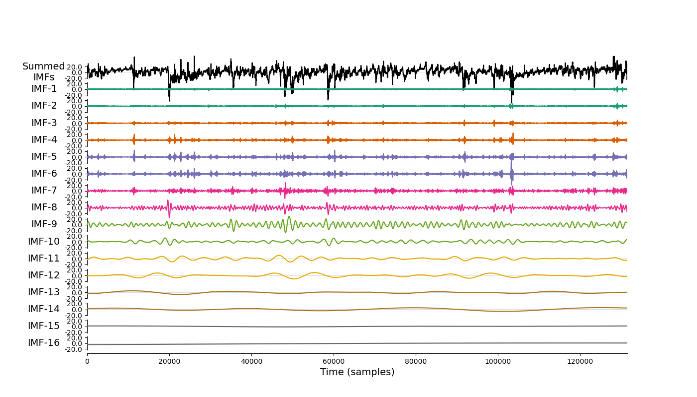
Altogether 16 sifts were found containing decreasing complex signal contributions. Summing up all these IMF curves will exactly reconstruct the original data, another important feature of EMD.In order to get comparable amount of sifts with similar frequency contents for different data selections you will need to supply 131500 minutes, corresponding to 3 months of geomagnetic data. This time range is good enough to cover essential periods affecting Sq-variation evolution below seasonal effects. Additionally it is quickly applicable. If you supply less data, the maximum amounts of sifts will be lower. Nevertheless, individual low-order sifts will contain similar frequency contributions.Frequency and amplitude characteristics
In a next step we are specifically interested in the frequency content of each sift. For this purpose we apply a Hilbert-Huang-transform to analyse distributions of instantaneous frequencies, amplitudes and phases of each sift. Results for IMF-6 are shown in Figure
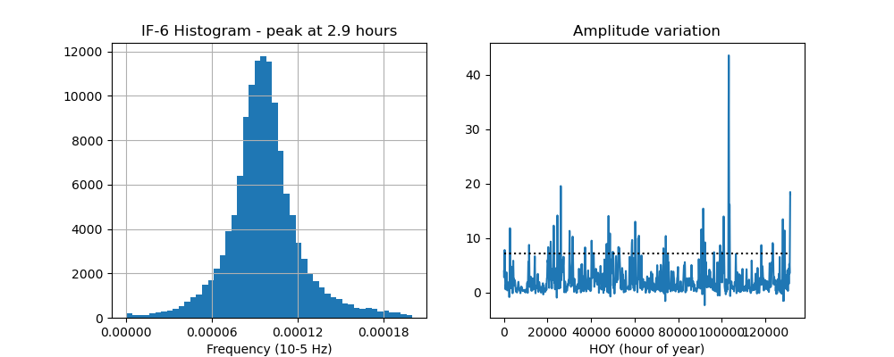
IMF-6 is hereby marking a period of about 3h, a range which is often used for the general baseline approximation (i.e. for K values).Its amplitude variation indicates a few time ranges containing "disturbed" data characterized by larger amplitude. The dashed line is related to the upper inner-quartile limit with a standard factor of 1.5 (i.e. Q3+f*IQR).If you are interested in determination of Sq baselines based on a frequency related filtering you can stop here already. Recombining all IMF from IMF-6 onwards will correspond to such frequency based filtering and provide a baseline very similar/almost identical to one used for K-value extraction.
Full application of this technique in MagPy is as follows:
from magpy.core import activity as act
data = read("path-to-one-minute-data")
sqcurce = act.sqbase(data, components=['x','y'], baseline_type='imf')
Cyclicity based Sq variation
For this approach we assume that any Sq signal is fully contained within the periodic oscillations that are present in our IMF's. In order to analyze these oscillations we follow the approach which is described here in detail. For each IMF we are examining cyclicity and distinguish between good and bad cycles. A good cycle is characterized by
a) A strictly positively increasing phase, b) A phase starting within phase_step of zero i.e. the lowest value of the instantaneous phase (IP) must be less than phase_step c) A phase ending within phase_step of 2Pi the highest value of IP must be between 2Pi and 2pi-phase_step d) A set of 4 unique control points (ascending zero, peak, descending zero & trough)
An example for IMF-9, which contains the most prominent diurnal signal is shown in Figure
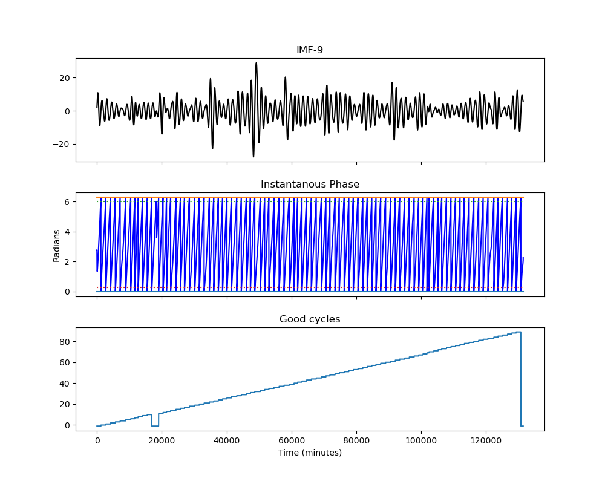
Cycles not satisfying above criteria are termed "bad" cycles and are masked from the Sq approximation.Starting with IMF-6 (period 3h) we are then determining a median of the average linear waveforms of identified "good" cycles, by running a gliding window of +/- 13 cycles across the investigated timeseries. In order to fill remaining gaps and smooth transitions between individual median cycles, the median cycle IMF is fitted by a cubic spline function with knots at each data point and using zero weights for non-existing data. The 13-cycle range is related to the dominating diurnal period, for which waveforms of -13 days + current day + 13 days = 27 days are considered. 27 days correspond to the solar rotation period, containing recurrent solar effects. Median IMF-10 and IMF-11 curves are calculated for 13 cycles (covering 27 days for IMF-10). For IMF's above 12 (period exceeding 8 days) we are using a simply linear fit of available data, as the average approximated length is significantly below the cycle frequency.
We obtain a running median waveform considering oscillation of the individual IMF's from IMF-6 onwards. Hereby we also excluded HF signal contributions by limiting to IMF-6 and larger. The Sq baseline will be a sum of individual median oscillations signals identified within the decomposed signal. Unlike the frequency technique above, this method will likely better estimate Sq variations during disturbed periods affecting hours/days. During quiet periods, however, a frequency related method is likely superior as such methods will remove any non-solar driven multi-day variation (i.e neutral atmosphere, see day2day variability in Haberle et al).
[!IMPORTANT] Correct application of the cyclicity analysis requires at least 1 month of one-minute data
Full application of the median Sq technique in MagPy is as follows:
from magpy.core import activity as act
data = read("path-to-one-minute-data")
sqcurce = act.sqbase(data, components=['x','y'], baseline_type='median')
Considering solar disturbances affecting low frequencies
The problem of purly frequency based baseline separation is, that during disturbed time of the geomagnetic field also longer periods of the geomagnetic field are affected with large amplitudes. A CME for example will affect the geomagnetic field for hours to days and thus is not adequately considered using a simple frequency based Sq determination technique. Low-frequency "periodicities" clearly affected by disturbed time ranges will still be contained and assumed to represent Sq variations.
For a many applications we are primarily interested in detecting significant features of the geomagnetic field of natural and artificial origin. CME effects and an optimal description of onset, amplitude and duration certainly belong to these features. Therefore the "solar quiet" reference baseline, containing untested features should not be biased by features which we are interested in.
To deal with such effects two approaches are used so far, at least to our knowledge, the method of SuperMag, which is not easily reproducible, and the Haberle method. Please consider the publication of Veronika Haberele as this approach, comprises the reasoning behind the technique described here, although application, theory and methods of MagPy are different.
In principle we are using two characteristics of IMF's in order to identify clearly disturbed time ranges, for which a standard baseline approximation as shown above is not precise. Firstly we are examining the amplitude variation of an IMF with periods just above the lower Sq period range. Hereby we assume that larger amplitudes are connected to disturbances related to solar effects, but still well above the period range of eventually undetected artificial disturbing sources. This is a perfectly valid assumption as shown in Fig. 4 (original signal with flags of CME from the CME database). Based on a statistical standard procedure, we assume time ranges(plus-minus a period range) of any IMF-6 amplitude variation data exceeding the upper limit of the inner-quartile range by IQR*1.5 as being disturbed. This approach can be applied to any data set independent from location.
Secondly, we analyze the cyclicity of the diurnal signal, which is obviously the most prominent period, and also might be affected by solar effects on the ionospheric current system. For this purpose we are analyzing the phase signal of IMF-9 as shown above. Cycles not satisfying above mentioned criteria are termed "bad" cycles and are also removed from the frequency related Sq approximation. In combination, these two methods will lead to an identification of time ranges for which a simple frequency based Sq determination technique does presumably not hold. A joint Sq baseline will assume that the median baseline will represent Sq variations better during such disturbed periods.
Thus, the joint procedure will determine gaps as described above. in a next step a weighting function will be determined with linear transitions between EMD Sq and median Sq curves. The weighting function for the median Sq curve is shown in Figure
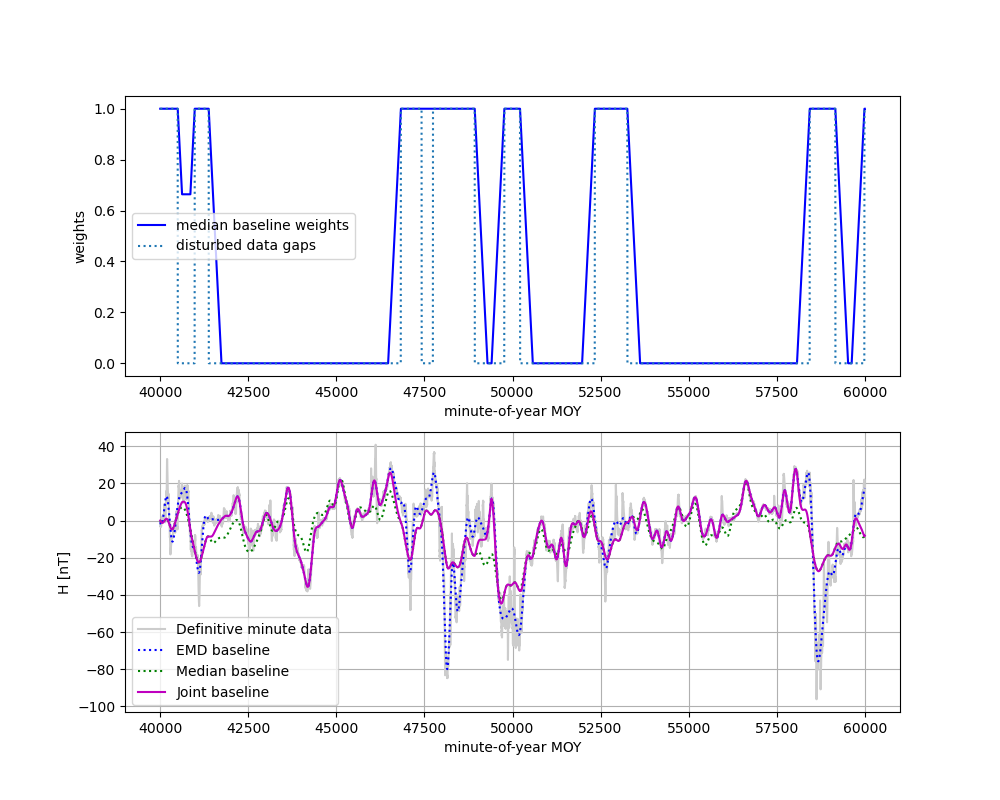
The weighting function of the EMD Sq baseline corresponds to the inverse. The window length for the gradual shift from EMD to Median curve is arbitrarily chosen to 12 hours and can be changed by options. All three Sq curve approximations are shown in th lower plot.Full application of the joint Sq technique in MagPy works as follows:
from magpy.core import activity as act
data = read("path-to-one-minute-data")
sqcurce = act.sqbase(data, components=['x','y'], baseline_type='joint')
9. SQL Databases
9.1 Database support
MagPy supports database access and many methods for optimizing data treatment in connection with databases. Among many other benefits, using a database simplifies many typical procedures related to meta-information. Currently, MagPy supports MySQL databases. To use these features, you need to have MySQL installed on your system. In the following we provide a brief outline of how to set up and use this optional addition. Please note that a proper usage of the database requires sensor-specific information. In geomagnetism, it is common to combine data from different sensors into one file structure. In this case, such data needs to remain separate for database usage and is only combined when producing IAGA/INTERMAGNET definitive data. Furthermore, unique sensor information such as type and serial number is required.
Open mysql (e.g. Linux: mysql -u root -p mysql) and create a new database. Replace #DB-NAME with your database
name (e.g. MyDB). After creation, you will need to grant privileges to this database to a user of your choice.
Please refer to official MySQL documentations for details and further commands.
mysql> CREATE DATABASE #DB-NAME;
mysql> GRANT ALL PRIVILEGES ON #DB-NAME.* TO '#USERNAME'@'%' IDENTIFIED BY '#PASSWORD';
Thats it! Everything else can now be done using MagPy's database support class, which is based on the pymysql module. To enable database support import the following module
from magpy.core import database
9.2 Basic usage of a MagPy database
Let us assume you have created a database called "mydatabase" and granted access to a user "maxmustermann" with password "geheim" on your computer. Connect to the data base:
db = database.DataBank("localhost","maxmustermann","geheim","mydatabase")
You access the database the first time you need to initialize a new database
db.dbinit()
This will set up a predefined table structure to be ready for MagPy interaction
MagPy is a dynamic project - if contents are and internal structure is changing you
can use the alter method to updated the table structure to any future version of MagPy
db.alter()
Add some datastream to the database
db.write(teststream1)
Add some additional data
db.write(teststream2)
Reading data is also very simple. Like for standard streams you can also specify starttime and endtime:
data = db.read('Test_0001_0001_0001')
Get some basic information on the current state of the database
db.info('stdout')
Check if sensorid is already existining - if not create it and fill with header info
db.sensorinfo('Test_0001_0001', {'SensorName' : 'BestSensorontheGlobe'})
Get some single string from tables
stationid = db.get_string('DATAINFO', 'Test_0001_0001', 'StationID')
print (stationid)
Get tablename of sensor
tablename = db.datainfo(teststream1.header.get('SensorID'), {'DataComment' : 'Add something'}, None, stationid)
print (tablename)
Generally check if a specific table/data set is existing
if db.tableexists('Test_0001_0001_0001'):
print (" Yes, this table exists")
Get some recent data lines from this table
data = db.get_lines(tablename, 1000)
print (len(data))
Get some single numerical data from tables
sr = db.get_float('DATAINFO', teststream1.header.get('SensorID'), 'DataSamplingRate')
print (sr)
Lets put some values into the predefined PIERS table which can be used to store information on all piers of your observatories
pierkeys = ['PierID', 'PierName', 'PierType', 'StationID', 'PierLong', 'PierLat', 'PierAltitude', 'PierCoordinateSystem', 'DeltaDictionary']
piervalues1 = ['P1','Karl-Heinzens-Supersockel', 'DI', 'TST', 461344.00, 5481745.00,100, 'EPSG:25832', '']
piervalues2 = ['P2','Hans-Rüdigers-Megasockel', 'DI', 'TST', 461348.00, 5481741.00,101, 'EPSG:25832', '']
We are using the update command to insert above defined data into the table PIERS. Please note that the update command
will call an "INSERT INTO" mysql command if no condition is given. Thus the command will fail in case of already
existing inputs. If pier data is already existing add something like condition="PierID LIKE 'P1'".
db.update('PIERS', pierkeys, piervalues1)
db.update('PIERS', pierkeys, piervalues2)
The update method can also be used to update basically any information in all other predefined tables
db.update('SENSORS', ['SensorGroup'], ['magnetism'], condition='SensorID="Test_0001_0001"')
Using select to generally extract information from any table based on the mysql select command db.select(field_of_interest, table, search_criteria
magsenslist = db.select('SensorID', 'SENSORS', 'SensorGroup = "magnetism"')
print ("Mag sens", magsenslist)
tempsenslist = db.select('SensorID', 'SENSORS','SensorElements LIKE "%T%"')
print ("Temp sens", tempsenslist)
lasttime = db.select('time', 'Test_0001_0001_0001', expert="ORDER BY time DESC LIMIT 1")
print ("Last time", lasttime)
There are a few further methods to extract very specific information out of some tables. You can use get_pier to
obtain delta values with respect to other pillars
value = db.get_pier('P2','P1','deltaF')
The coordinate method is useful to extract coordinates and convert them into any desired new coordinate-system
(long, lat) = db.coordinates('P1')
Lets read again some data:
data = db.read('Test_0001_0001_0001') # test with all options sql, starttime, endtime
Please note: MagPy2.0 is approximately 14 times faster then MagPy1.x for such operations.
data.header['DataSensorOrientation'] = 'HEZ'
Let us change the header information of the data set and then update only the database's header information by the new data header
db.update_datainfo('Test_0001_0001_0001', data.header)
Delete contents - the following call delete everything except the last day of data. The option samplingrateratio can be used to delete data in dependency of the sampling rate i.e. samplingrateratio=12 will delete everything older then 12 days with sampling period 1 sec and everything older the 60*12 = 720 days for sampling periods 60 sec. Together with archive functions and optimize sql routines this method is useful to keep the database slim and quick for recent data
db.delete('Test_0001_0001_0001', timerange=1)
If you want to delete the data base completely use mysql commands
9.3 Flagging and databases
Working with flagging information is also supported by the database class. There are three methods which can be used to store and read flags from databases. An existing flagging object can be stored in the database using the following command assuming you flags are contained in variable 'fl'
db.flags_to_db(fl)
Reading flags from the database is done similar. Possible options are starttime, endtime, sensorid, comment, key and flagtype:
flnew = db.flags_from_db()
If you want to delete specific flags from the data base use the flag_to_delete command and define a parameter and
associated value. Parameter "all" will delete all existing flags in the database
db.flags_to_delete(parameter="operator", value="RL")
9.4 Absolutes and databases
Database tools support the treatment of absolute values as well as baseline evaluation. Besides storing DI data in files it is also possible to use the magpy database for this purpose. Two methods allow for storing and retrieving DI data from the database.
db = database.DataBank("localhost","maxmustermann","geheim","testdb")
absst = di.abs_read(example6a)
db.diline_to_db((absst, mode="delete", stationid='WIC')
res = db.diline_from_db()
You can store baseline fitting parameters for each variometer defined by its SensorID within the MagPy database. The
default table for this purpose is called "BASELINE". To retrieve baseline adoption parameters from the database use
the get_baseline method. This method will return a dictionary containing the valid fitting function and its parameters
for the selected date. If no date is provided, then the currently valid parameters will be returned.
baseline_adoption = db.get_baseline('LEMI036_2_0001', date="2021-01-01")
10. Additional methods and functions
10.1 Converting the internal data structure
Besides writing data using MagPy's functionality , you can also convert internal data structures to commonly used structures of other python packages and work with their functionality.
10.1.1 pandas support
Pandas see conversion module
10.1.2 ObsPy support
ObsPy see conversion module
10.2 Testing data validity before submissions to IM and IAGA
A common and important application used in the geomagnetism community is a general validity check of geomagnetic data to be submitted to the official data repositories IAGA, WDC, or INTERMAGNET. A 'one-click' test method is included in xmagpy. Please consult the XMagPy manual.
10.3 The art of meta-information
Each data set is accompanied by a dictionary containing meta-information for this data. This dictionary is completely dynamic and can be filled freely, but there are a number of predefined fields that help the user provide essential meta-information as requested by IAGA, INTERMAGNET and other data providers. All meta information is saved only to MagPy-specific archive formats PYCDF and PYSTR. All other export formats save only specific information as required by the projected format.
The current content of this dictionary can be accessed by:
data = read(example1)
print(data.header)
Information is added/changed by using:
data.header['SensorName'] = 'FGE'
Individual information is obtained from the dictionary using standard key input:
print(data.header.get('SensorName'))
If you want to have a more readable list of the header information, do:
for key in data.header:
print ("Key: {} \t Content: {}".format(key,data.header.get(key)))
10.4.1 Conversion to ImagCDF - Adding meta-information
To convert data from IAGA or IAF formats to the new INTERMAGNET CDF format, you will usually need to add additional meta-information required for the new format. MagPy can assist you here, firstly by extracting and correctly adding already existing meta-information into newly defined fields, and secondly by informing you of which information needs to be added for producing the correct output format.
Example of IAGA02 to ImagCDF:
mydata = read('IAGA02-file.min')
mydata.write('/tmp',format_type='IMAGCDF')
The console output of the write command (see below) will tell you which information needs to be added (and how) in order to obtain correct ImagCDF files. Please note, MagPy will store the data in any case and will be able to read it again even if information is missing. Before submitting to a GIN, you need to make sure that the appropriate information is contained. Attributes that relate to publication of the data will not be checked at this point, and might be included later.
>>>Writing IMAGCDF Format /tmp/wic_20150828_0000_PT1M_4.cdf
>>>writeIMAGCDF: StandardLevel not defined - please specify by yourdata.header['DataStandardLevel'] = ['None','Partial','Full']
>>>writeIMAGCDF: Found F column
>>>writeIMAGCDF: given components are XYZF. Checking F column...
>>>writeIMAGCDF: analyzed F column - values are apparently independend from vector components - using column name 'S'
Now add the missing information. Selecting 'Partial' will require additional information. You will get a 'reminder' if you forget this. Please check IMAGCDF instructions on specific codes:
mydata.header['DataStandardLevel'] = 'Partial'
mydata.header['DataPartialStandDesc'] = 'IMOS-01,IMOS-02,IMOS-03,IMOS-04,IMOS-05,IMOS-06,IMOS-11,IMOS-12,IMOS-13,IMOS-14,IMOS-15,IMOS-21,IMOS-22,IMOS-31,IMOS-41'
Adding flagging information into IMAGCDF, which is experimental and not yet officially supported by INTERMAGNET:
if mydata.header.get('DataFlags'):
mydata.write('/tmp',format_type='IMAGCDF', addflags=True)
Similar reminders to fill out complete header information will be shown for other conversions like:
mydata.write('/tmp',format_type='IAGA')
mydata.write('/tmp',format_type='IMF')
mydata.write('/tmp',format_type='IAF',coverage='month')
mydata.write('/tmp',format_type='WDC')
10.4.2 Providing location data
Providing location data usually requires information on the reference system (ellipsoid,...). By default MagPy assumes that these values are provided in WGS84/WGS84 reference system. In order to facilitate most easy referencing and conversions, MagPy supports EPSG codes for coordinates. If you provide the geodetic references as follows, and provided that the proj4 Python module is available, MagPy will automatically convert location data to the requested output format (currently WGS84).
mydata.header['DataAcquisitionLongitude'] = -34949.9
mydata.header['DataAcquisitionLatitude'] = 310087.0
mydata.header['DataLocationReference'] = 'GK M34, EPSG: 31253'
>>>...
>>>writeIMAGCDF: converting coordinates to epsg 4326
>>>...
10.4.3 Special meta-information fields
The meta-information fields can hold much more information than required by most output formats. This includes
basevalue and baseline parameters, flagging details, detailed sensor information, serial numbers and much more. MagPy
makes use of these possibilities. In order to save this meta-information along with your data set you can use MagPy
internal archiving format, PYCDF, which can later be converted to any of the aforementioned output formats. You can
even reconstruct a full data base. Any upcoming meta-information or output request can be easily added/modified without
disrupting already existing data sets and the ability to read and analyse old data. This data format is also based
on Nasa CDF. ASCII outputs are also supported by MagPy, of which the PYSTR format also contains all meta information
and PYASCII is the most compact. Please consider that ASCII formats require a lot of memory, especially for one
second and higher resolution data.
mydata.write('/tmp',format_type='PYCDF',coverage='year')
10.5 MagPy's logging system and debugging support
MagPy automatically logs many function options and runtime information, which can be useful for debugging purposes.
This log is saved by default in the temporary file directory of your operating system, e.g. for Linux this would be
/tmp/magpy.log. The log is formatted as follows with the date, module and function in use and the message leve (INFO/WARNING/ERROR):
2017-04-22 09:50:11,308 INFO - magpy.stream - Initiating MagPy...
Messages on the WARNING and ERROR level will automatically be printed to shell. Messages for more detailed debugging are written at the DEBUG level and will not be printed to the log unless an additional handler for printing DEBUG is added.
Custom loggers can be defined by creating a logger object after importing MagPy and adding handlers (with formatting):
from magpy.stream import *
import logging
logger = logging.getLogger()
hdlr = logging.FileHandler('testlog.log')
formatter = logging.Formatter('%(asctime)s - %(name)s - %(levelname)s - %(message)s')
hdlr.setFormatter(formatter)
logger.addHandler(hdlr)
The logger can also be configured to print to shell (stdout, without formatting):
import sys
logger = logging.getLogger()
stdoutlog = logging.StreamHandler(sys.stdout)
logger.addHandler(stdoutlog)
10.6 Using credential information: the addcred command
After installing MagPy the addcred command will be available. This command will help you to work with credential information.
DESCRIPTION:
Addcred can be used to keep sensitive credential information out of scripts.
Usage:
addcred.py -v
Options: -v : view all existing credentials -t : define type of data: db, transfer or mail -c : shortcut to access stored information -d : name of a database for db type -u : user name -p : password (will be encrypted) -s : smtp address for mail types -a : address for transfer type -o : host of database -l : port of transfer protocol
APPLICATION:
addcred -t transfer -c zamg -u max -p geheim -a "ftp://ftp.remote.ac.at" -l 21
!!!! please note: put path in quotes !!!!!!
Appendix
A1 - library - supported data formats, included runtime and read/write tests
| library | formats | version | read/write | runtime tests | RW | requirements |
|---|---|---|---|---|---|---|
| format_abs_magpy.py | DI: MAGPYABS,JSONANS,MAGPYNEWABS | 2.0.0 | r | absolutes | ||
| format_acecdf.py | ACECDF | 2.0.0 | r | no | X | cdflib |
| format_autodif.py | DI: AUTODIFABS | 2.0.0 | r | absolutes | ||
| format_autodif_fread.py | DI: AUTODIF_FREAD** | -.-.- | rw | - | - | absolutes |
| format_basiccsv.py | CSV | 2.0.0 | rw | yes | X | csv |
| format_bdv.py | BDV1** | 0.x | - | - | ||
| format_covjson.py | COVJSON | 2.0.0 | rw | yes | X | json |
| format_cr800.py | CR800*,RADON | 2.0.0 | r | no | X | csv |
| format_didd.py | DIDD | 2.0.0 | rw | yes | X | csv |
| format_dtu.py | DTU1** | 0.x | - | - | ||
| format_gdas.py | GDASA1,GDASB1* | 2.0.0 | r | no | X | |
| format_gfz.py | GFZKP,GFZINDEXJSON | 2.0.0 | r | yes | -,- | json |
| format_gfzcdf.py | GFZCDF | 2.0.0 | r | no | X | |
| format_gfztmp.py | GFZTMP | 2.0.0 | r | - | - | |
| format_gsm19.py | GSM19 (b,wg) | 2.0.0 | r | no | X | |
| format_hapijson.py | * | -.-.- | rw | future | - | json |
| format_iaga02.py | IAGA | 2.0.0 | rw | yes | X | pyproj |
| format_imagcdf.py | IMAGCDF | 2.0.0 | rw | yes | X | pyproj,cdflib |
| format_imf.py | IAF,IMF,DKA,BLV(1,2),IYFV | 2.0.0 | rw | yes | X,X,X,X,X | pyproj |
| format_iono.py | IONO | 2.0.0 | r | no | X | csv |
| format_latex.py | LATEX | 2.0.0 | w | yes | - | opt/Table.py |
| format_lemi.py | LEMIHF,LEMIBIN,LEMIBIN1 | 2.0.0 | r,r,r | no | -,-,X | struct |
| format_magpy.py | PYASCII,PYSTR,PYBIN | 2.0.0 | rw,rw,r | yes | X,X,X | csv |
| format_magpycdf.py | PYCDF | 2.0.0 | rw | yes | X | cdflib |
| format_nc.py | NETCDF* | -.-.- | rw | future | - | netcdf |
| format_neic.py | NEIC | 2.0.0 | r | no | X | |
| format_noaa.py | NOAAACE,DSCOVR,XRAY | 2.0.0 | r,r,r | no | X,X,X | json |
| format_pos1.py | POSMPB,POS1TXT,POS1 | 2.0.0 | r,r,r | no | X,X,X | |
| format_predstorm.py | PREDSTORM | 2.0.0 | r | no | X | |
| format_qspin.py | QSPIN | 2.0.0 | r | no | X | |
| format_rcs.py | RMRCS,RCS* | 2.0.0 | r | no | X,- | |
| format_sfs.py | SFDMI,SFGSM | 0.x | r,r | - | - | |
| format_tsf.py | TSF | 2.0.0 | r | no | X | |
| format_wdc.py | WDC | 2.0.0 | rw | yes | X | |
| format_wic.py | IWT,METEO,USBLOG,LIPPGRAV,LNM | 2.0.0 | r,r,r,r,r | no | X,X,X,X,X | csv |
| format_wik.py | PMAG1,PMAG2,OPT** | 2.0.0 | r,r | no | X,X |
Runtime tests: internal testing routines contained within each library file, only available for rw libraries. RW: a local read/(write) test based on various example files. Done using libraries2.0.ipynb which is only available on dedicated testing machines. Write tests are also included in stream.write which stores dummy data in all file types supporting write_format commands.
- incomplete formats or tests:
- CR800 - not yet written completely plus no data
- NETCDF - not yet written
- RCS - not yet written
- HAPIJSON - not yet written
- GDASB1,LEMIHF,LEMIBIN - no example files for testing
- GFZTMP - untested but principally usable
** deprecated formats in 2.0.0: - OPT (in wik, old excel import from optical data readout) - DTU1 (in dtu, text format used when jürgen was at dtu, still in linestruct version) - AUTODIF_FREAD - Deprecated - Special format for AutoDIF read-in - AUTODIF (in abs_magpy, replaced by AUTODIFABS) - BDV1 (in bdv, Budkov data format) - SFDMI,SFGSM (in sfs, San Fernando data format)
removed in 2.0.0: - CS (in wic, was never included properly - CS data is creating binary PYBIN files) - PHA (in format_pha.py, deleted, potentially hazardous asteroids) - COMMATXT - (in format_simpletable.py) replaced by basiccsv, CSV
A2 - stream.py - all methods, overview with runtime and verification tests
| class | method | since version | until version | runtime test | result verification | manual | *tested by |
|---|---|---|---|---|---|---|---|
| stream | |||||||
| DataStream | _aic | 2.0.0 | yes* | yes* | - | core.activity | |
| DataStream | _convertstream | 2.0.0 | yes | yes | 5.2 | ||
| DataStream | _copy_column | 2.0.0 | yes | yes | 5.1 | ||
| DataStream | _det_trange | 2.0.0 | yes* | yes | - | filter | |
| DataStream | _drop_column | 2.0.0 | yes | yes | 5.1 | ||
| DataStream | _find_t_limits | 2.0.0 | 2.1.0 | yes | - | - | |
| DataStream | _get_column | 2.0.0 | yes | yes | 5.1 | ||
| DataStream | _get_key_headers | 2.0.0 | yes | yes | 5.1 | ||
| DataStream | _get_key_names | 2.0.0 | yes | yes | 5.1 | ||
| DataStream | _get_max | 2.0.0 | yes | yes | 5.5 | ||
| DataStream | _get_min | 2.0.0 | yes | yes | 5.5 | ||
| DataStream | _get_variance | 2.0.0 | yes | yes | 5.5 | ||
| DataStream | _move_column | 2.0.0 | yes | yes | 5.1 | ||
| DataStream | _print_key_headers | 2.0.0 | yes | - | 5.1 | ||
| DataStream | _put_column | 2.0.0 | yes | yes | 5.1 | ||
| DataStream | _remove_nancolumns | 2.0.0 | yes* | yes | 5.1 | subtract_streams | |
| DataStream | _select_keys | 2.0.0 | yes | yes | 5.1 | ||
| DataStream | _select_timerange | 2.0.0 | yes* | yes | 5.1 | write | |
| DataStream | _tau | 2.0.0 | yes* | yes | - | filter | |
| DataStream | add | 2.0.0 | yes* | yes* | - | absolutes | |
| DataStream | apply_deltas | 2.0.0 | yes | yes* | methods.data_for_di | ||
| DataStream | aic_calc | 2.0.0 | yes | yes* | 8.2 | core.activity | |
| DataStream | amplitude | 2.0.0 | yes | yes | 5.5 | ||
| DataStream | baseline | 2.0.0 | yes | yes | 5.9,7.5 | ||
| DataStream | bc | 2.0.0 | yes | yes | 7.5 | ||
| DataStream | calc_f | 2.0.0 | yes | yes | 5.4 | ||
| DataStream | compensation | 2.0.0 | yes | yes | 5.1 | ||
| DataStream | contents | 2.0.0 | yes | yes | 4.4 | ||
| DataStream | cut | 2.0.0 | yes | yes | 5.1 | ||
| DataStream | dailymeans | 2.0.0 | yes | yes | 5.3 | ||
| DataStream | delta_f | 2.0.0 | yes | yes | 5.4 | ||
| DataStream | derivative | 2.0.0 | yes | yes | 5.7 | ||
| DataStream | determine_rotationangles | 2.0.0 | yes | yes | 5.2 | ||
| DataStream | dict2stream | 2.0.0 | yes* | yes* | - | baseline | |
| DataStream | dropempty | 2.0.0 | yes* | yes* | - | sorting | |
| DataStream | dwt_calc | 2.0.0 | yes* | yes* | 8.2 | core.activity | |
| DataStream | end | 2.0.0 | yes | yes | 5.1 | ||
| DataStream | extend | 2.0.0 | yes* | yes | 5.10 | read | |
| DataStream | extract | 2.0.0 | yes | yes | 5.1 | ||
| DataStream | extract_headerlist | 2.0.0 | yes | - | 8.2 | core.activity | |
| DataStream | extrapolate | 2.0.0 | yes | yes | 5.8 | ||
| DataStream | filter | 2.0.0 | yes | yes | 5.3 | ||
| DataStream | fillempty | 2.0.0 | yes* | yes* | - | sorting | |
| DataStream | findtime | 2.0.0 | yes* | yes | 5.1 | resample | |
| DataStream | fit | 2.0.0 | yes | yes | 5.9 | ||
| DataStream | func2header | 2.0.0 | yes | yes | 5.9 | ||
| DataStream | func2stream | 2.0.0 | yes | yes | 5.9 | ||
| DataStream | get_fmi_array | 2.0.0 | yes* | yes* | core.activity | ||
| DataStream | get_gaps | 2.0.0 | yes | yes | 5.3 | ||
| DataStream | get_key_name | 2.0.0 | yes | yes | 5.1 | ||
| DataStream | get_key_unit | 2.0.0 | yes | yes | 5.1 | ||
| DataStream | get_sampling_period | 2.0.0 | yes* | yes | - | samplingrate | |
| DataStream | harmfit | 2.0.0 | yes* | yes | - | fit | |
| DataStream | hdz2xyz | 2.0.0 | yes* | yes* | 5.2 | _convertstream | |
| DataStream | idf2xyz | 2.0.0 | yes* | yes* | 5.2 | _convertstream | |
| DataStream | integrate | 2.0.0 | yes | no | 5.7 | ||
| DataStream | interpol | 2.0.0 | yes | yes | 5.9 | ||
| DataStream | interpolate_nans | 2.0.0 | yes | yes | 5.3,5.9 | ||
| DataStream | length | 2.0.0 | yes* | yes | 5.1 | ||
| DataStream | mean | 2.0.0 | yes | yes | 5.5 | ||
| DataStream | modwt_calc | 2.0.0 | yes* | yes* | - | core.activity | |
| DataStream | multiply | 2.0.0 | yes | yes | 5.6 | ||
| DataStream | offset | 2.0.0 | yes | yes | 5.6 | ||
| DataStream | randomdrop | 2.0.0 | yes | yes | 5.1 | ||
| DataStream | remove | 2.0.0 | yes | yes | 5.1 | ||
| DataStream | resample | 2.0.0 | yes* | yes | 5.3 | filter | |
| DataStream | rotation | 2.0.0 | yes | yes | 5.2 | ||
| DataStream | samplingrate | 2.0.0 | yes | yes | 5.1 | ||
| DataStream | simplebasevalue2stream | 2.0.0 | yes* | yes* | ! | test_absolute_analysis | |
| DataStream | smooth | 2.0.0 | yes | yes | 5.3 | ||
| DataStream | sorting | 2.0.0 | yes* | no | 5.1 | read | |
| DataStream | start | 2.0.0 | yes | yes | 5.1 | ||
| DataStream | stats | 2.0.0 | yes | yes | 5.1 | ||
| DataStream | steadyrise | 2.0.0 | yes | not yet | |||
| DataStream | stream2dict | 2.0.0 | yes* | yes* | - | baseline | |
| DataStream | timerange | 2.0.0 | yes | yes | 5.1 | ||
| DataStream | trim | 2.0.0 | yes | yes | 5.1 | ||
| DataStream | union | 2.0.0 | yes | yes | - | flagging | |
| DataStream | unique | 2.0.0 | yes | yes | 4.4 | ||
| DataStream | use_sectime | 2.0.0 | yes | yes | 5.1 | ||
| DataStream | variables | 2.0.0 | yes | yes | 5.1 | ||
| DataStream | write | 2.0.0 | yes | yes* | 3.x | in runtime | |
| DataStream | xyz2hdz | 2.0.0 | yes* | yes* | 5.2 | _convertstream | |
| DataStream | xyz2idf | 2.0.0 | yes* | yes* | 5.2 | _convertstream | |
| determine_time_shift | 2.0.0 | yes | yes* | 5.10 | validity in runtime | ||
| join_streams | 2.0.0 | yes | yes* | 5.10 | validity in runtime | ||
| merge_streams | 2.0.0 | yes | yes* | 5.10 | validity in runtime | ||
| subtract_streams | 2.0.0 | yes | yes* | 5.10 | validity in runtime | ||
| append_streams | 2.0.0 | ... | yes* | 5.10 | validity in runtime |
deprecated: - stream._find_t_limits() - stream.flag_range() -> moved to core.flagging - stream.flag_outlier(self, kwargs) -> moved to core.flagging - stream.remove_flagged(self, kwargs) -> core.flagging.apply_flags - stream.flag() -> core.flagging.apply_flags - stream.bindetector(self,key,text=None,**kwargs): - stream.stream2flaglist(self, userange=True, flagnumber=None, keystoflag=None, sensorid=None, comment=None)
removed: - stream.extractflags() -> not useful any more - stream.flagfast() -> not useful any more - used for previous flagging plots outside xmagpy - stream.flaglistadd() -> core.flagging add
A3 - core/flagging.py - all methods, overview with runtime and verification tests
| class | method | since version | until version | runtime test | result verification | manual | *tested by |
|---|---|---|---|---|---|---|---|
| core.flagging | |||||||
| flags | _check_version | 2.0.0 | flagging.load | ||||
| flags | _match_groups | 2.0.0 | yes | yes* | apply_flags, create_patch | ||
| flags | _list | 2.0.0 | yes | yes | |||
| flags | _set_label_from_comment | 2.0.0 | flagging.load | ||||
| flags | add | 2.0.0 | yes | yes | 6.1 | ||
| flags | apply_flags | 2.0.0 | yes | 6.1 | |||
| flags | copy | 2.0.0 | yes | yes | 6.1 | ||
| flags | create_patch | 2.0.0 | app** | 6.1 | |||
| flags | diff | 2.0.0 | yes | yes | 6.1 | ||
| flags | drop | 2.0.0 | yes | yes | 6.1 | ||
| flags | fprint | 2.0.0 | yes | yes | 6.1 | ||
| flags | join | 2.0.0 | yes | yes | 6.1 | ||
| flags | replace | 2.0.0 | yes | yes | 6.1 | ||
| flags | rename_nearby | 2.0.0 | yes | yes | 6.1 | ||
| flags | save | 2.0.0 | yes | 6.1 | |||
| flags | select | 2.0.0 | yes | yes | 6.1 | ||
| flags | stats | 2.0.0 | yes | yes | 6.1 | ||
| flags | timerange | 2.0.0 | yes | 6.1 | |||
| flags | trim | 2.0.0 | yes | yes | 6.1 | ||
| flags | union | 2.0.0 | yes | yes | 6.1 | ||
| _dateparser | 2.0.0 | flagging.load | |||||
| _readJson | 2.0.0 | flagging.load | |||||
| _readPickle | 2.0.0 | flagging.load | |||||
| load | 2.0.0 | app** | 6.6 | ||||
| convert_to_flags | 2.0.0 | app** | 6.5 | ||||
| flag_outlier | 2.0.0 | yes | app** | 6.2 | |||
| flag_range | 2.0.0 | yes | app** | 6.3 | |||
| flag_binary | 2.0.0 | yes | app** | 6.4 | |||
| flag_ultra | 2.0.0 | no | no | 6.7 |
A4 - absolutes.py - all methods, overview with runtime and verification tests
| class | method | since version | until version | runtime test | result verification | manual | *tested by |
|---|---|---|---|---|---|---|---|
| core.absolutes | |||||||
| AbsoluteDIStrcut | 2.0.0 | yes | yes | 7.1 | |||
| DILineStruct | get_data_list | 2.0.0 | yes | yes | 7.1 | ||
| DILineStruct | get_abs_distruct | 2.0.0 | yes | yes | 7.1 | ||
| DILineStruct | save_di | 2.0.0 | yes* | yes* | 7.3 | absolute_analysis | |
| AbsoluteAnalysis | add | 2.0.0 | unused? | ||||
| AbsoluteAnalysis | extend | 2.0.0 | unused? | ||||
| AbsoluteAnalysis | sorting | 2.0.0 | unused? | ||||
| AbsoluteAnalysis | _corrangle | 2.0.0 | yes | yes | - | ad._calcdec | |
| AbsoluteAnalysis | _get_max | 2.0.0 | yes | yes | - | unused? | |
| AbsoluteAnalysis | _get_min | 2.0.0 | yes | yes | - | unused? | |
| AbsoluteAnalysis | _get_column | 2.0.0 | yes | yes | - | ad._calcdec | |
| AbsoluteAnalysis | _check_coverage | 2.0.0 | yes | 7.1 | |||
| AbsoluteAnalysis | _insert_function_values | 2.0.0 | yes | 7.1 | |||
| AbsoluteAnalysis | _calcdec | 2.0.0 | yes | yes | 7.1 | ad.calcabsolutes | |
| AbsoluteAnalysis | _calcinc | 2.0.0 | yes | yes | 7.1 | ad.calcabsolutes | |
| AbsoluteAnalysis | _h | 2.0.0 | yes | yes | - | ad._calcinc | |
| AbsoluteAnalysis | _z | 2.0.0 | yes | yes | - | ad._calcinc | |
| AbsoluteAnalysis | calcabsolutes | 2.0.0 | 7.1 | ||||
| _analyse_di_source | 2.0.0 | yes | - | ||||
| _logfile_len | 2.0.0 | - | unused? | ||||
| deg2degminsec | 2.0.0 | yes | yes | 7.2 | |||
| d | absRead | 2.0.0 | 2.1.0 | - | |||
| abs_read | 2.0.0 | yes | 7.1 | ||||
| _abs_read | 2.0.0 | yes | - | ||||
| d | absoluteAnalysis | 2.0.0 | 2.1.0 | - | |||
| absolute_analysis | 2.0.0 | yes | yes | 7.2 |
A5 - core/activity.py - all methods, overview with runtime and verification tests
| class | method | since version | until version | runtime test | result verification | manual | *tested by |
|---|---|---|---|---|---|---|---|
| core.activity | |||||||
| core.conversions | |||||||
| decompose | 2.0.0 | yes* | 8.3 | sqbase | |||
| k_fmi | 2.0.0 | yes* | yes* | 8.1 | K_fmi | ||
| stormdet | 2.0.0 | yes* | yes* | 8.2 | seek_storm | ||
| emd_decompose | 2.0.0 | yes* | 8.3 | sqbase | |||
| K_fmi | 2.0.0 | yes | yes | 8.1 | |||
| seek_storm | 2.0.0 | yes | yes | 8.2 | |||
| sqbase | 2.0.0 | yes | no | 8.3 | requires long test set |
A6 - core/database.py - all methods, overview with runtime and verification tests
| class | method | since version | until version | runtime test | result verification | manual | *tested by |
|---|---|---|---|---|---|---|---|
| core.database | |||||||
| DataBank | _executesql | 2.0.0 | yes* | many | |||
| DataBank | alter | 2.0.0 | yes | 9.2 | db.dbinit | ||
| DataBank | coordinate | 2.0.0 | yes | 9.2 | unused? | ||
| DataBank | datainfo | 2.0.0 | yes | yes* | db.write | ||
| DataBank | dbinit | 2.0.0 | yes | 9.2 | |||
| DataBank | delete | 2.0.0 | yes | 9.2 | |||
| DataBank | diline_to_db | 2.0.0 | yes* | yes* | 9.4 | absolutes | |
| DataBank | diline_from_db | 2.0.0 | yes* | yes* | 9.4 | absolutes | |
| DataBank | dict_to_fields | 2.0.0 | yes | ||||
| DataBank | fields_to_dict | 2.0.0 | yes* | yes* | db.read, db.get_lines | ||
| DataBank | flags_from_db | 2.0.0 | yes | yes | 9.3 | ||
| DataBank | flags_to_db | 2.0.0 | yes | yes | 9.3 | ||
| DataBank | flags_to_delete | 2.0.0 | yes | yes | 9.3 | ||
| DataBank | get_baseline | 2.0.0 | yes | yes | 9.4 | ||
| DataBank | get_float | 2.0.0 | yes | yes | 9.2 | ||
| DataBank | get_lines | 2.0.0 | yes | yes | 9.2 | ||
| DataBank | get_pier | 2.0.0 | yes | yes | 9.2 | ||
| DataBank | get_string | 2.0.0 | yes | yes | 9.2 | ||
| DataBank | info | 2.0.0 | yes | 9.2 | |||
| DataBank | read | 2.0.0 | yes | yes | 9.2 | ||
| DataBank | select | 2.0.0 | yes | yes | 9.2 | ||
| DataBank | sensorinfo | 2.0.0 | yes | yes* | db.write | ||
| DataBank | set_time_in_datainfo | 2.0.0 | yes* | yes* | db.write | ||
| DataBank | update | 2.0.0 | yes | yes | 9.2 | ||
| DataBank | update_datainfo | 2.0.0 | yes | unused? | |||
| DataBank | tableexists | 2.0.0 | yes | yes | 9.2 | ||
| DataBank | write | 2.0.0 | yes | yes | 9.2 |
A7 - core/conversion.py - all methods, overview with runtime and verification tests
to be continued
A8 - core/methods.py - all methods, overview with runtime and verification tests
| class | method | since version | until version | runtime test | result verification | manual | *tested by |
|---|---|---|---|---|---|---|---|
| core.methods | |||||||
| ceil_dt | 2.0.0 | yes | yes | ||||
| convert_geo_coordinate | 2.0.0 | yes | yes | ||||
| data_for_di | 2.0.0 | yes* | yes* | absolutes | |||
| dates_to_url | 2.0.0 | yes | |||||
| deprecated | 2.0.0 | -- | -- | ||||
| d | denormalize | 2.0.0 | 2.1.0 | no | no | ||
| dictdiff | 2.0.0 | yes | yes | ||||
| dictgetlast | 2.0.0 | yes | yes | ||||
| dict2string | 2.0.0 | yes | yes | ||||
| evaluate_function | 2.0.0 | yes* | plot | ||||
| extract_date_from_string | 2.0.0 | yes | yes | ||||
| find_nearest | 2.0.0 | yes | yes | ||||
| find_nth | 2.0.0 | yes | yes | flagbrain | |||
| func_from_file | 2.0.0 | yes | yes* | 5.9 | stream | ||
| func_to_file | 2.0.0 | yes | yes* | 5.9 | stream | ||
| get_chunks | 2.0.0 | yes | yes | ||||
| group_indices | 2.0.0 | yes | yes | ||||
| is_number | 2.0.0 | yes | yes | ||||
| mask_nan | 2.0.0 | maskNAN | yes | yes | |||
| missingvalue | 2.0.0 | yes | yes | ||||
| nan_helper | 2.0.0 | yes | yes | ||||
| nearestpow2 | 2.0.0 | yes | yes | ||||
| normalize | 2.0.0 | yes | |||||
| round_second | 2.0.0 | yes | yes | ||||
| string2dict | 2.0.0 | yes | yes | ||||
| testtime | 2.0.0 | yes | yes* | library | |||
| test_timestring | 2.0.0 | yes |
A9 - core/plot.py - all methods, overview with runtime and verification tests
| class | method | since version | until version | runtime test | result verification | manual | *tested by |
|---|---|---|---|---|---|---|---|
| core.plot | |||||||
| tsplot | 2.0.0 | yes | - | 4.x | |||
| testtimestep | 2.0.0 | yes | yes | - | |||
| fill_list | 2.0.0 | yes | yes | - |
A10 - other modules - all methods, overview with runtime and verification tests
to be added
A11 - The json structure of flagging information
{ '238799807134' : { 'sensorid': 'XXXsec_4_0001',
'starttime': datetime.datetime(2022, 4, 4, 5, 39, 52, 900000),
'endtime': datetime.datetime(2022, 4, 4, 5, 39, 53, 100000),
'components': ['x', 'y'],
'flagtype': 1,
'labelid': '002',
'label': 'spike',
'comment': 'spike',
'groups': None,
'probabilities': None,
'stationid': 'XXX',
'validity': '',
'operator': 'John Doe',
'color': 'red',
'modificationtime': datetime.datetime(2024, 8, 29, 2, 28, 21, 770142),
'flagversion': '2.0'},
another unique ID : { 'sensorid': 'XXXsec_4_0001',
...}
}
A12 - Format of MagPy DI files
A MagPy Do data file contains the following blocks. The header block at which each line starts with #. Possible fields are listed below.
The Miren block: The azimuth data block following the Miren: headline. The azimuth/miren block requires 8 input values which typically refer to the following measurements: The first four values are determined (1) before D measurement: two sensor up and two sensor down measurements. The last four values are determined (2) after the D measurement: two sensor up and two sensor down measurements.
The Positions block: This block has to contain 17 inputs. The first 8 are related to the 4 Positions of D measurements for up to two repeated measurements are supported for each position. The order of the input values is East Up, West Up, East Down, West Down, the three data columns contain horizontal angle, vertical angle and residual. If you are not using the residual method, a 0.0 value is required for the residual. If you are not repeatedly measure each position, each second line should be a copy of the measurement data. The next 8 positions are related to the inclination measurement, again with two optional measurements for each position. The order of positions is North Up, South Down, North Down, South Up. The last line, number 17, refers to a scale test and is typically a single additional step following your last measurement (South Up) with a small angular deviation producing a residual of 100-200 nT. This step is used to determine the scale value of the fluxgate probe and should be performed when using the residual technique. If not used please just copy the South Up data in here.
The PPM block: Please use this block solely for scalar measurements before or after the DI measurement on the very SAME pier as the DI measurement.
The Results block: Deprecated since a while and not used any more. Should be empty.
XMagPy provides an input sheet which will create MagPy DI data files. The input sheet can be modified and amount of measurements and order of positions can be changed to fit your personal procedure. The DI data file however is always structured as described above.
# Abs-Observer: Musterfrau
# Abs-Theodolite: T010B_160391_072011
# Abs-TheoUnit: deg
# Abs-FGSensor: MAG01H_504-0911H_032016
# Abs-AzimuthMark: 180.1372
# Abs-Pillar: A2
# Abs-Scalar: GSM19_12345
# Abs-Temperature: 7.8C
# Abs-InputDate: 2018-08-29
# Abs-Notes: add some comments
Miren:
155.8175 155.81833333333 335.81972222222 335.82027777778 155.81861111111 155.81888888889 335.82 335.81972222222
Positions:
2018-08-29_07:42:00 250.18777777778 90 0.2
2018-08-29_07:42:30 250.18777777778 90 0.7
2018-08-29_07:44:00 69.847777777778 90 0.7
2018-08-29_07:44:30 69.847777777778 90 1.0
2018-08-29_07:46:00 69.885555555556 270 -0.1
2018-08-29_07:46:30 69.885555555556 270 -0.4
2018-08-29_07:48:00 250.17111111111 270 0.0
2018-08-29_07:48:30 250.17111111111 270 0.0
2018-08-29_07:55:00 0 64.2875 0.0
2018-08-29_07:55:30 0 64.2875 -0.7
2018-08-29_07:57:00 0 244.30083333333 -0.3
2018-08-29_07:57:30 0 244.30083333333 -0.7
2018-08-29_07:59:30 180 295.56138888889 -1.6
2018-08-29_08:00:00 180 295.56138888889 -1.3
2018-08-29_08:01:30 180 115.54777777778 -0.4
2018-08-29_08:02:00 180 115.54777777778 -0.5
2018-08-29_08:03:00 180 115.71444444444 140.9
PPM:
2018-08-29_08:20:00 48578.12
2018-08-29_08:21:00 48578.52
Result:
In a future version an additional file format will be added which allows more flexibility i.e. more repeated measurements, and better descriptions within the data file. Further pending DI updates: support of Mingeo Digital Station.
A13 - Updating an existing MagPy1.x database to be compatible with MagPy2.x
- MagPy2.x uses datetime columns for times
- MagPy2.x changed the flagging contents based on new ID assignments
- MagPy2.x changes the DI contents based on new ID assignments
- etc
MagPy2.x can read all previous contents. In order to add new data it is necessary to update the database tables for supporting the new data types.